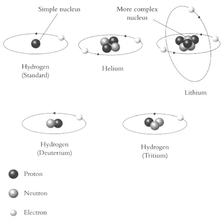
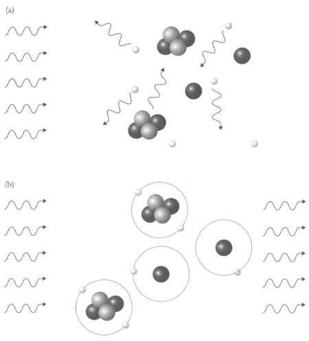
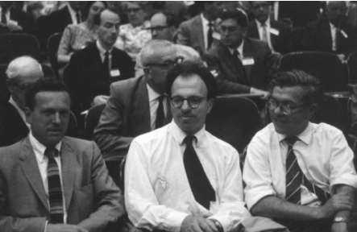

Chapter 4
MAVERICKS OF THE COSMOS
The super-system of the galaxies is dispersing as a puff of smoke disperses. Sometimes I wonder whether there may not be a greater scale of existence of things, in which it is no more than a puff of smoke.
ARTHUR EDDINGTON
Nature shows us only the tail of the lion. But I have no doubt that the lion belongs to it even though he cannot totally reveal himself all at once because of his large size. We can see him only the way a louse that is sitting on him would.
ALBERT EINSTEIN
Cosmologists are often in error, but never in doubt.
LEV LANDAU
Albert Michelson, having banished the ether a few years earlier, delivered a speech at the University of Chicago in 1894. He proclaimed: ‘The most important fundamental laws and facts of physical science have all been discovered, and these are now so firmly established that the possibility of their ever being supplemented in consequence of new discoveries is exceedingly remote…Our future discoveries must be looked for in the sixth place of decimals.’
The second half of the nineteenth century had indeed been a glorious time for physics, with many great mysteries solved, but to suggest that the only remaining task was to increase the accuracy of measurements was to prove patently absurd. Michelson would live to see his bold statement crumble. Within a few decades, the development of quantum and nuclear physics would shake the very foundations of science. Moreover, cosmologists would have to completely reassess their understanding of the universe.
The late-nineteenth-century view of the universe had been of an eternal and largely unchanging cosmos. But, while flappers flapped and stock markets crashed, the scientists of the 1920s were forced to consider a rival cosmic model which described an expanding universe that had been born a billion or two years ago.
This kind of upheaval in scientific thinking can be initiated in two ways. One involves theorists, who might reach a surprising conclusion by applying the laws of physics in a new direction. The other way involves experimenters or observers, who might measure something or see something that causes them to question previous assumptions. The upheaval in cosmology that took place in the 1920s was unusual because the established model of an eternal universe came under simultaneous attack on both fronts. Georges Lemaître and Alexander Friedmann had used theory to develop the idea of an expanding universe, as described in Chapter 2. In parallel, Edwin Hubble was independently observing galactic redshifts, which also implied an expanding universe, as described in Chapter 3.
Friedmann was no longer alive to hear about Hubble’s observations, having died without receiving any recognition for his ideas. Lemaître, however, was more fortunate. In his 1927 paper, in which he proposed the Big Bang model of the universe, he predicted that the galaxies should be racing away at speeds that were proportional to their distances. Initially, his work was ignored because there was no evidence to support it, but two years later Hubble published his observations which showed that the galaxies were indeed receding, and Lemaître was vindicated at last.
Lemaître had previously written to Arthur Eddington about his Big Bang model, but had received no reply. When Hubble’s discovery hit the headlines, Lemaître wrote to Eddington again, hoping that this time the distinguished astrophysicist would realise that his theory tied in perfectly with the emerging data. George McVittie was Eddington’s student at the time and recalled his supervisor’s reaction to the persistent priest: ‘Eddington, rather shamefacedly, showed me a letter from Lemaître which reminded Eddington of the solution to the problem which Lemaître had already given. Eddington confessed that although he had seen Lemaître’s paper in 1927 he had forgotten completely about it until that moment. The oversight was quickly remedied by Eddington’s letter to the prestigious journal Nature in June 1930, in which he drew attention to Lemaître’s brilliant work of three years before.’
He had overlooked Lemaître’s research in the past, but now it seemed that Eddington was prepared to give it his blessing by promoting it. In addition to his letter to Nature, Eddington also translated Lemaître’s paper and published it in the Monthly Notices of the Royal Astronomical Society. He called it a ‘brilliant solution’ and ‘a complete answer to the problem’, meaning that Lemaître’s model perfectly explained Hubble’s measurements.
Gradually word spread through the scientific community, and there was a slowly growing admiration for the perfect match between Lemaître’s theoretical predictions and Hubble’s observations. Until this point, all cosmologists had focused their attention on Albert Einstein’s eternal static model of the universe, but now a significant minority considered Lemaître’s model to be far more powerful.
To recap: Lemaître had argued that general relativity (in its purest form) implied that the universe is expanding. If the universe is expanding today, then in the past it must have been more compact. Logically, the universe must have started from a highly compact state, the so-called primeval atom of small but finite size. Lemaître thought that the primeval atom might have existed for eternity before there was some ‘rupture of the equilibrium’, whereupon the atom decayed and ejected all its fragments. He defined the beginning of this decay process as the start of our universe’s history. This was effectively the moment of creation—in Lemaître’s words, ‘a day without a yesterday’.
Friedmann’s view of the moment of creation had been slightly different from Lemaître’s. Instead of picturing the universe as emerging from a primeval atom, Friedmann’s Big Bang model had argued that everything emerged from a point. In other words, the entire universe had been squeezed into nothing. Either way, primeval atom or single point, theories about the actual moment of creation were clearly highly speculative and would remain so for some time. With other aspects of the Big Bang model, however, there was a greater degree of confidence and broad agreement among its advocates.
For example, Hubble had observed that the galaxies were receding from the Earth, just as predicted by the Big Bang model, but Big Bang theorists unanimously believed that the galaxies were not actually moving through space, but were moving along with space. Eddington explained this subtle point by comparing space to the surface of a balloon, simplifying the three spatial dimensions of the universe onto a two-dimensional closed rubber sheet, as shown in Figure 64. The balloon’s surface is covered with dots, which represent the galaxies. If the balloon is inflated to twice its original diameter, then the distance between the dots will double in size, so the dots are effectively moving away from one another. The crucial point is that the dots are not moving across the surface of the balloon—instead, it is the surface itself that is expanding, thereby increasing the distance between the dots. Similarly, the galaxies are not moving through space, rather it is the space between the galaxies that is expanding.
Although the redshifting of galactic light was explained in Chapter 3 simply in terms of the recession of galaxies, it now becomes clear that the actual cause of the redshift is the stretching of space. As the light waves leave a galaxy and travel towards the Earth, they are stretched because the space in which they are travelling is itself being stretched, which is why the wavelengths grow longer and the light appears redder. Although this cosmological redshifting of light has a different cause than the usual Doppler shifting of waves, the description of the Doppler effect in Chapter 3 remains a useful way to think about the redshifts of galaxies.
Figure 64 The universe is represented here as the surface of a balloon. Each dot represents a galaxy, and the circled dot represents our own Milky Way galaxy. As the balloon inflates (i.e. as the universe expands), the other dots appear to recede from us, just as Hubble observed that all the galaxies are receding from us. The more distant the galaxy, the farther it moves in a given time interval, so the faster it moves – which is Hubble’s law. This effect is highlighted by the distances marked to two galaxies, one near and one far.
If all of space is expanding and the galaxies sit in space, then you might think that the galaxies would also be expanding. In theory this could happen, but in practice the huge gravitational forces that exist within galaxies mean that this effect is insignificant. Therefore expansion is relevant on a cosmic intergalactic level, but not on a local intragalactic level. In a flashback at the start of the Woody Allen film Annie Hall, Mrs Singer takes her son Alvy to see a therapist because he is depressed. The boy explains to the doctor that he has read that the universe is expanding, so he thinks that everything around him will eventually be torn apart. His mother interrupts: ‘What has the universe got to do with it? You’re here in Brooklyn! Brooklyn is not expanding!’ Mrs Singer was absolutely correct.
Now that the balloon analogy has been introduced, this is a good time to clear up a common misunderstanding. If all the galaxies are getting farther away from the Earth, doesn’t this imply that the Earth is at the centre of the universe? It seems as though the entire universe emerged from where we now live. Do we really occupy a special place in the cosmos? In fact, no matter where an observer is situated, there is the illusion of centrality. Returning to Figure 64, we can imagine that our Milky Way is one of the dots, and that as the balloon inflates, all the other dots seem to move away from us. However, from the vantage point of a different dot, all the other dots appear to be moving away from that other dot. In other words, that other dot thinks that it is at the centre of the universe. There is no centre to the universe—or perhaps every galaxy can claim to be at the centre of the universe.
Albert Einstein had lost interest in cosmology in the mid-1920s, but he re-engaged with the subject after Hubble’s observations reinforced the idea of a Big Bang. In 1931, while on a sabbatical at the California Institute of Technology (Caltech), he and his second wife, Elsa, paid a visit to the Mount Wilson Observatory as Hubble’s guests of honour. They were given a guided tour of the giant 100-inch Hooker Telescope, and the astronomers explained how this gigantic machine was essential for exploring the universe. To their surprise, Elsa was not particularly impressed: ‘Well, well, my husband does that on the back of an old envelope.’
However, Einstein’s efforts were restricted to theorising, and theories can be wrong. That is why investing in expensive experiments and vast telescopes is so worthwhile, because they alone make it possible for us to differentiate between a good theory and a bad theory. Einstein’s earlier envelope jottings had argued for a static universe, which Hubble’s observations now seemed to contradict, thus illustrating the power of observation to judge theory.
While at Mount Wilson, Einstein spent time with Milton Humason, Hubble’s assistant, who showed him various photographic plates and pointed out the galaxies they had probed. He also showed Einstein the galaxies’ spectra, which had revealed a systematic redshift. Einstein had already read Hubble and Humason’s published papers, but now he could see the data for himself. The conclusion seemed to be unavoidable. The observations indicated that the galaxies were receding and that the universe was expanding.
On 3 February 1931, Einstein made an announcement to journalists gathered in the library of the Mount Wilson Observatory. He publicly renounced his own static cosmology and endorsed the Big Bang expanding universe model. In short, he found Hubble’s observations to be convincing, and admitted that Lemaître and Friedmann had been right all along. With the world’s most famous genius changing his mind and now backing the Big Bang, the expanding universe was official as far as the newspapers were concerned. Hubble’s hometown paper, the Springfield Daily News, ran the headline YOUTH WHO LEFT OZARK MOUNTAINS TO STUDY STARS CAUSES EINSTEIN TO CHANGE HIS MIND.
Not only did Einstein abandon his static universe model, but he also reconsidered his equation for general relativity. Remember, Einstein’s original equation had accurately explained the familiar force of gravitational attraction, but this attractive force would eventually cause the entire universe to collapse. Because the universe was supposed to be eternal and static, he added the cosmological constant—in effect, a fudge—to his equation in order to simulate a repulsive force that acted over large distances, thereby preventing collapse. Now that the universe no longer appeared to be static, Einstein ditched the cosmological constant and returned to his original equation for general relativity.
Einstein had always felt uncomfortable about the cosmological constant, having inserted it into his equation only to comply with the establishment view of a static and eternal universe. Convention and compliance, it turned out, had led him astray. Throughout his early life as a physicist, when he was at his intellectual peak, he had always followed his instinct and ignored authority. On the single occasion on which he had bowed to peer pressure, he was proved to be wrong. Later he would call the cosmological constant the greatest blunder of his entire life. As he wrote in a letter to Lemaître: ‘Since I have introduced this term I had always a bad conscience…I am unable to believe that such an ugly thing should be realised in nature.’
Although Einstein was keen to abandon his cosmic fudge factor, cosmologists who still believed in an eternal, static universe were convinced that the cosmological constant was an essential and valid part of general relativity. Even some Big Bang cosmologists had become quite fond of it and were reluctant to lose it. By retaining the cosmological constant and varying its value, they could tweak their theoretical models of the Big Bang and modify the universe’s expansion. The cosmological constant represented an anti-gravity effect, so it made the universe expand faster.
The value and validity of the cosmological constant generated some conflict among the supporters of the Big Bang theory, but Lemaître and Einstein showed a united front when they met at a seminar at Mount Wilson’s base camp in Pasadena in January 1933, nearly two years after Einstein’s first visit to the observatory. Lemaître presented his vision of the Big Bang model to the seminar’s distinguished audience of astronomers and cosmologists, including Edwin Hubble. Although this was an academic gathering, Lemaître wove some poetic imagery in among the physics. In particular, he returned to his favourite firework analogy: ‘In the beginning of everything we had fireworks of unimaginable beauty. Then there was an explosion followed by the filling of the heavens with smoke. We come too late to do more than visualise the splendour of creation’s birthday!’
Figure 65 Albert Einstein and Georges Lemaître at Pasadena in 1933 for the seminar on Hubble’s observations and the Big Bang model of the universe.
Even though Einstein had probably hoped for more mathematical detail and less embroidery, he still paid tribute to Lemaître’s pioneering efforts: ‘This is the most beautiful and satisfactory explanation of creation to which I have ever listened.’ Praise indeed, especially from a man who just six years earlier had called Lemaître’s physics ‘abominable’.
Einstein’s endorsement marked the start of Lemaître’s life as a celebrity, within science and beyond. After all, here was the man who had proved Einstein wrong and who had such great foresight that he had predicted the expansion of the universe before telescopes were powerful enough to detect the fleeing galaxies. Lemaître was invited to speak all over the world and he received numerous international awards—indeed, he could lay claim to that rare honour of being a famous Belgian. Part of his popularity, charm and iconic status came from his dual role as a priest and a physicist. Duncan Aikman of the New York Times, who covered the 1933 Pasadena meeting, wrote: ‘His view is interesting and important not because he is a Catholic priest, not because he is one of the leading mathematical physicists of our time, but because he is both.’
Like Galileo, Lemaître believed that God had blessed humans with an enquiring mind and that He would look fondly upon scientific cosmology. At the same time, Lemaître kept his physics and his religion separate, declaring that his religious beliefs certainly did not motivate his cosmology. ‘Hundreds of professional and amateur scientists actually believe the Bible pretends to teach science,’ he said. ‘This is a good deal like assuming that there must be authentic religious dogma in the binomial theorem.’
Nevertheless, some scientists continued to believe that theology had negatively influenced the priest’s cosmology. This anti-religious faction complained that his primeval atom theory of creation was nothing more than a pseudo-scientific justification of a master creator, a modern version of the Book of Genesis. In order to undermine Lemaître’s position, these critics highlighted a serious flaw in the Big Bang hypothesis, namely its estimate for the age of the universe. According to Hubble’s observations, the distance and velocity measurements implied a universe less than 2 billion years old. Given that contemporary geological research had estimated the age of some Earth rocks to be 3.4 billion years, there was an embarrassing age gap of at least 1.4 billion years. The Big Bang model seemed to imply that the Earth was older than the universe.
As far as the Big Bang critics were concerned, the fundamental problem with Lemaître’s model was that the universe did not have a finite age. They argued that the universe was eternal and unchanging, and that the Big Bang model was nonsense. This was still the establishment view.
However, the establishment could not merely sit back and attack the Big Bang—they also had to explain the latest observations in the context of their preferred eternal universe model. Hubble’s observations clearly indicated that the galaxies were redshifted and receding, so the Big Bang critics had to demonstrate that this did not necessarily imply a moment of creation in the past.
The Oxford astrophysicist Arthur Milne was one of the first to come up with an alternative way of explaining Hubble’s law that was consistent with an eternal universe. In his theory, dubbed kinematic relativity, galaxies had a wide range of speeds, some moving slowly through space, some moving very quickly. Milne argued that it was only natural for the more distant galaxies to be the faster ones, as observed by Hubble, because it was only thanks to their speed that they had got so far away. According to Milne, the fact that the galaxies receded with a speed in proportion to their distance was not a consequence of some exploding primeval atom, but emerged naturally when randomly moving entities were allowed to move unhindered. This argument was far from watertight, but it did encourage other astronomers to think creatively about Hubble’s redshifts in the framework of an eternal universe.
Figure 66 Fritz Zwicky, inventor of the flawed theory of tired light, which attempted to explain Hubble’s galactic redshift observations
One of the fiercest critics of the Big Bang model was the Bulgarian-born Fritz Zwicky, infamous among cosmologists for his eccentricity and recalcitrance. He had been invited to Caltech and Mount Wilson in 1925 by the Nobel Laureate Robert Millikan, and Zwicky repaid the favour by announcing on one occasion that Millikan had never had a good idea in his life. All of his colleagues were targets of his abuse, and many of them were subjected to his favourite insult—‘spherical bastard’. Just as a sphere looks the same from every direction, a spherical bastard was someone who was a bastard whatever way you looked at them.
Zwicky examined Hubble’s data and questioned whether the galaxies were even moving at all. His alternative explanation for the galactic redshifts was based on the accepted notion that anything emitted from a planet or star loses energy. For example, if you throw a stone high into the air, it leaves the Earth’s surface with energy and speed, but the gravitational force of the dense Earth reduces the stone’s kinetic energy, slowing it down until it stops and falls back to Earth. Similarly, light escaping from a galaxy will have its energy sapped by the galaxy’s gravitational force. The light cannot slow down because the speed of light is constant, so instead the loss of energy manifests itself as an increase in the light’s wavelength, making it appear redder. In other words, here was another possible explanation for Hubble’s redshift observations, one that did not involve universal expansion.
Zwicky’s argument that the redshifts were caused by galactic gravity draining light of its energy was called the tired light theory. The main problem with the tired light theory was that it was not supported by the known laws of physics. Calculations showed that gravity would have some effect on light and cause a redshift, but only at a very minor level and certainly not enough to account for Hubble’s observations. Zwicky countered by criticising the observations and claiming that they might be exaggerated. True to form, he even questioned Hubble and Humason’s integrity, implying that their team might have abused their privilege of controlling the world’s best telescope. Zwicky claimed: ‘Sycophants among their young assistants were thus in a position to doctor their observational data, to hide their shortcomings.’
Although this sort of outspoken behaviour certainly turned many scientists against Zwicky, there were still a few who joined his tired light brigade. They were not even dissuaded by his apparently faulty physics, because Zwicky had an impeccable track record in research. Indeed, during the course of his career he would go on to do groundbreaking work on supernovae and neutron stars. He even predicted the existence of dark matter, a mysterious invisible entity which was initially derided, but which is now widely accepted as real. The tired light theory seemed equally laughable, but perhaps it too would turn out to be right.
The Big Bang supporters, however, rejected the notion of tired light completely. At best, they argued, it could account for only a tiny fraction of the observed redshift. On behalf of the Big Bang camp, Arthur Eddington summarised what he thought was wrong with Zwicky’s theory: ‘Light is a queer thing—queerer than we imagined twenty years ago—but I should be surprised if it is as queer as all that.’ In other words, Einstein’s theory of relativity had transformed our understanding of light, but there was still no room for tired light in terms of explaining Hubble’s redshifts.
Although Eddington had attacked Zwicky’s tired light theory and promoted Lemaître’s original paper, he still kept a relatively open mind on the question of the origin of the universe. Eddington thought that Lemaître’s ideas were important and worthy of a wider audience, which is why he wrote about them in major journals and helped to translate the Belgian’s work, but he was not wholly convinced by the thought of the entire universe being suddenly born out of the decay of a primeval atom: ‘Philosophically the notion of a beginning of the present order of Nature is repugnant to me. I should like to find a genuine loophole…As a scientist I simply do not believe the Universe began with a bang…it leaves me cold.’ Eddington felt that Lemaître’s model of creation was ‘too unaesthetically abrupt’.
In the end, Eddington developed his own variation of Lemaître’s model. He was content to start off with a small compact universe, not unlike Lemaître’s primeval atom. Then, instead of a sudden expansion, he favoured a very gradual expansion, which eventually accelerated to arrive at the expansion that we see today. Lemaître’s expansion was like a bomb exploding suddenly and violently; Eddington’s expansion was more like the gradual build-up of an avalanche. A mountain covered in snow might be stable for many months. Then a faint puff of wind causes a snowflake to dislodge an ice crystal, which topples onto another crystal, which rolls and forms a crumb of snow and then a mini-snowball, which gathers more weight, knocking more ice and snow down the slope until sheets of snow start collapsing and a full-blown avalanche is under way.
Eddington explained why he preferred his more gradual buildup to the Big Bang: ‘There is at least a philosophical satisfaction in regarding the world as beginning to evolve infinitely slowly from a primitive uniform distribution in unstable equilibrium.’
Eddington also claimed that his version of events could explain something emerging from nothing, thanks to some rather dubious logic. His train of thought began with the premise that the universe had always existed, and if we went back in time far enough then we would discover a perfectly smooth, compact universe, which had itself lasted for an eternity. Next, Eddington argued that such a universe was equivalent to nothing: ‘To my mind undifferentiated sameness and nothingness cannot be distinguished philosophically.’ The tiniest imaginable fluctuation in the universe—the equivalent of a snowflake starting an avalanche—would then have fractured the symmetry of the cosmos and triggered a chain of events that led to the full-blown expansion that we see today.
In 1933 Eddington wrote a popular primer, The Expanding Universe, which was intended to explain the latest ideas in cosmology in a mere 126 pages. He covered general relativity, Hubble’s observations, Lemaître’s primeval atom and his own ideas, maintaining a whimsical touch throughout. For example, because all the galaxies are fleeing, Eddington urged astronomers to quickly build better telescopes before the galaxies got too far away to see. In another tongue-in-cheek aside, Eddington turned Hubble’s observations inside out: ‘All change is relative. The universe is expanding relatively to our common material standard; our material standards are shrinking relatively to the size of the universe. The theory of the “expanding universe” might also be called the theory of the “shrinking atom”…Is not the expanding universe another example of distortion due to our egocentric outlook? Surely the universe should be the standard and we should measure our own vicissitudes by it.’
In a more serious vein, Eddington gave an honest summary of the state of the Big Bang model. He pointed out that there were important theoretical reasons and persuasive observational evidence in favour of a moment of creation, but also that there was still a huge amount of work to be done before the Big Bang model could be widely accepted. He called Hubble’s redshifts ‘too slender a thread on which to hang far-reaching conclusions’. The burden of proof was clearly upon the proponents of the Big Bang model, and he encouraged them to seek out more evidence with which to defend their position.
While the scientific establishment still held to its traditional view of an eternal and largely static universe, the Big Bang supporters prepared themselves for the battle ahead, buoyed to some extent by the knowledge that they were now in a position to hold a mature debate with the conservatives. Cosmology was no longer dominated by myth, religion and dogma, and it was less susceptible to fashion or the force of personality, because the power of twentieth-century telescopes held the promise of observations that might help shore up one theory and destroy another.
Eddington himself was optimistic that some version of the Big Bang model would eventually triumph. Towards the end of his book, he crafted a simple yet compelling image to illustrate the state of the Big Bang model in the early 1930s:
How much of the story are we to believe? Science has its showrooms and its workshops. The public today, I think rightly, is not content to wander round the showrooms where the tested products are exhibited; they demand to see what is going on in the workshops. You are welcome to enter; but do not judge what you see by the standards of the showroom. We have been going round a workshop in the basement of the building of science. The light is dim, and we stumble sometimes. About us is confusion and mess which there has not been time to sweep away. The workers and their machines are enveloped in murkiness. But I think that something is being shaped here—perhaps something rather big. I do not quite know what it will be when it is completed and polished for the showroom.
From the Cosmic to the Atomic
In order for the Big Bang model to be accepted, there was one seemingly innocuous question that could not be ignored: why are some substances more common than others? If we look at our own planet, we find that the Earth’s core is made of iron, its crust is dominated by oxygen, silicon, aluminium and iron, the oceans are largely made of hydrogen and oxygen (i.e. H2O, water), and the atmosphere is mainly nitrogen and oxygen. If we venture slightly farther afield, then we find that this distribution is not typical on a cosmic scale. By using spectroscopy to study starlight, astronomers realised that hydrogen was by far the most abundant element in the universe. This conclusion was celebrated by updating a famous nursery rhyme:
Twinkle, Twinkle little star,
I don’t wonder what you are;
For by spectroscopic ken,
I know that you are hydrogen;
Twinkle, Twinkle little star,
I don’t wonder what you are.
The next most abundant element in the universe is helium, and together hydrogen and helium overwhelmingly dominate the universe. These are also the two smallest and lightest elements, so astronomers were confronted by the fact that the universe consists predominantly of small atoms rather than large atoms. The extent of this bias is highlighted by the following list of cosmic abundances according to the number of atoms. These values are based on current measurements, which are not far from the values estimated in the 1930s:
| Element | Relative abundance |
|---|---|
| Hydrogen | 10,000 |
| Helium | 1,000 |
| Oxygen | 6 |
| Carbon | 1 |
| All others less than | 1 |
In other words, hydrogen and helium together accounted for roughly 99.9% of all the atoms in the universe. The two lightest elements were extremely abundant, then the next batch of light or medium-weight atoms were much less common, and finally the heaviest atoms such as gold and platinum were rare indeed.
Scientists began to wonder why there should be these extremes of cosmic abundance between the light and heavy elements. The supporters of the eternal universe model were unable to give a clear answer; their fallback position was that the universe had always contained the elements in their present proportions, and always would. The range of abundances was simply an inherent property of the universe. It was not a very satisfactory answer, but it had a certain self-consistency.
However, the mystery of the abundances was more problematic for supporters of the Big Bang. If the universe had evolved from a moment of creation, why had it evolved in such a way as to generate hydrogen and helium rather than gold and platinum? What was it about the process of creation that preferentially created light elements rather than heavy elements? Whatever the explanation, the Big Bang supporters had to find it and show that it was compatible with the Big Bang model. Any reasonable cosmological theory had to accurately explain how the universe came to be the way it is today, otherwise it would be considered a failure.
Addressing this problem would require a very different approach to any previous cosmic investigation. In the past, cosmologists had concentrated on the very large. For example, they had studied the universe using general relativity, the theory that described the long-range force of gravity between giant celestial bodies. And they used giant telescopes to look at very big galaxies that were very far away. But to tackle the problem of cosmic abundances, scientists would need new theories and new equipment to describe and probe the very, very small.
Before embarking on this part of the Big Bang story, it is first necessary to take a short step back in time and examine the modern history of the atom. The rest of this section tells the story of the physicists who laid the foundations for atomic physics, whose work enabled the Big Bang supporters to investigate why the universe was full of hydrogen and helium.
Attempts to understand the atom took off when chemists and physicists became intrigued by the phenomenon of radioactivity, which was discovered in 1896. It became apparent that some of the heaviest atoms, such as uranium, are radioactive, which means that they are capable of spontaneously emitting very high amounts of energy in the form of radiation. For a while, nobody could understand what this radiation was or what caused it.
Marie and Pierre Curie were at the forefront of research into radioactivity. They discovered new radioactive elements, including radium, which is a million times more radioactive than uranium. Radium’s radioactive emissions are eventually absorbed by whatever surrounds it, and the energy is converted into heat. In fact, 1 kilogram of radium generates enough energy to boil a litre of water in half an hour and, more impressively, the radioactivity continues almost unabated—so a single kilogram could continue to boil a fresh litre of water every thirty minutes for thousands of years. Although radium releases its energy very slowly compared with an explosive, it eventually releases a million times more energy than the equivalent weight of dynamite.
For many years nobody fully appreciated the dangers associated with radioactivity, and substances such as radium were looked upon with naive optimism. Sabin von Sochocky of the US Radium Corporation even predicted that radium would be used as a domestic power source: ‘The time will doubtless come when you will have in your own house a room lighted entirely by radium. The light, thrown off by radium paint on walls and ceiling, would in color and tone be like soft moonlight.’
The Curies both suffered from lesions, but carried on with their research regardless. Their notebooks became so radioactive after years of exposure to radium that today they have to be stored in a lead-lined box. So often were Marie’s hands covered with radium dust that her fingers have left invisible radioactive traces on the pages of her notebooks, and a photographic film slipped between the pages can actually record her fingerprints. Marie eventually died of leukaemia.
In many ways, the great sacrifices made by the Curies in their cramped Parisian laboratory served only to highlight the huge lack of understanding as to what was going on inside the atom. Scientists seemed to have gone backwards in their knowledge – just a few decades earlier they had claimed to fully comprehend the building blocks of matter thanks to the periodic table. In 1869, the Russian chemist Dmitri Mendeleev had drawn up a chart that listed all the elements then known, from hydrogen to uranium. By combining the atoms of different elements in the periodic table in various ratios, it was possible to build molecules and explain every material under the Sun, inside the Sun and beyond the Sun. For example, two atoms of hydrogen plus one atom of oxygen made one molecule of water, H2O. This much still remained true, but the Curies demonstrated that there was a mighty energy source within some atoms, and the periodic table could not explain this phenomenon. Nobody really had a clue about what was actually going on deep inside the atom. Nineteenth-century scientists had pictured atoms as simple spheres, but there had to be something more complicated about the atomic structure to account for radioactivity.
Figure 67 The periodic table displays all the chemical elements, the building blocks of matter. They could have been put in a single line, from lightest to heaviest (1 hydrogen, 2 helium, 3 lithium, 4 beryllium, etc.), but this tabular arrangement is far more illuminating. The periodic table groups elements to reflect common properties. For example, the column on the far right contains the so-called noble gases (helium, neon, etc.), whose atoms very seldom react with other atoms to form molecules. Despite its role in helping to understand how the elements reacted with one another, the periodic table did not offer any insight into the cause of radioactivity.
One of the physicists drawn to this problem was a New Zealander, Ernest Rutherford. He was much loved by his colleagues and students, but he was also known as a gruff authoritarian who was prone to temper tantrums and displays of arrogance. For example, according to Rutherford, physics was the only important science. He believed that it provided a deep and meaningful understanding of the universe, whereas all the other sciences were preoccupied with mere measuring and cataloguing. He once stated: ‘All science is either physics or stamp collecting.’ This blinkered comment backfired when the Nobel Committee awarded him the 1908 chemistry prize.
Figure 68 The portrait of Ernest Rutherford was taken when he was in his mid-thirties. He had a disdain for chemists, which was not uncommon among physicists. For example, Nobel physicist Wolfgang Pauli was angry when his wife left him for a chemist: ‘Had she taken a bullfighter then I would have understood, but an ordinary chemist…’ The second photograph shows a more mature Rutherford with his colleague John Ratcliffe at the Cavendish Laboratory. The talk softly please sign above their heads was aimed at Rutherford, who had a predilection for singing ‘Onward Christian Soldiers’ at the top of his voice, disturbing the laboratory’s sensitive equipment.
Figure 69 This cross-section shows J.J. Thomson’s plum pudding model of the atom, whereby each atom consisted of a number of negative particles (the plums) embedded within a positively charged dough (the pudding). A light hydrogen atom would have one negative particle embedded within a small amount of positive dough, whereas a heavy gold atom would have many negative particles embedded within a larger amount of positive dough.
By the time Rutherford embarked on his research in the early 1900s, the picture of the atom was slightly more sophisticated than the simple, structureless sphere envisioned in the nineteenth century. Atoms were now regarded as containing two ingredients, a positively charged material and a negatively charged one. Opposite charges attract, which was why these materials remained bound within the atom. Then, in 1904, the eminent Cambridge physicist J.J. Thomson offered a refinement that became known as the plum pudding model, in which the atom consisted of a number of negative particles embedded within a positively charged dough-like material, as shown in Figure 69.
One form of radioactivity involved the emission of alpha radiation, which seemed to consist of positively charged particles, known as alpha particles. Presumably this could be explained in terms of atoms spitting out bits of positive dough. To test this hypothesis and the whole plum pudding model, Rutherford decided to see what would happen if he took the alpha particles emitted from one set of atoms and fired them into another set of atoms. In other words, he wanted to use alpha particles to probe the atom.
In 1909, Rutherford asked two young physicists, Hans Geiger and Ernest Marsden, to conduct the experiment. Geiger would later become famous for his invention of a radiation detector, the Geiger counter, but for the time being the duo had to make do with only the most primitive equipment. The only way to detect the presence of alpha particles was to place a screen made of zinc sulphide where the alpha particles were supposed to arrive. The alpha particles would emit a tiny flash of light as they struck the zinc sulphide, but seeing the flash would require Geiger and Marsden to have spent thirty minutes adapting their eyes to the absolute darkness. Even then, they still had to view the zinc sulphide screen through a microscope.
A key part of the experiment was a radium sample, which sprayed out alpha particles in all directions. Geiger and Marsden surrounded the radium with a lead shield containing a narrow slit, which turned the spray into a controlled beam of alpha particles. Next they placed a sheet of gold foil in the line of fire to see what would happen to the alpha particles as they hit the gold atoms, as shown in Figure 70.
Alpha particles are positively charged, and atoms are a mixture of negative and positive charges; like charges repel, while unlike charges attract. Therefore, Geiger and Marsden hoped that the interaction between the alpha particles and the gold atoms would reveal something about the charge distribution within the gold atoms. For example, if gold atoms really did consist of negative particles spread through a positive dough, then alpha particles should be deflected only slightly, because they would be encountering a mix of evenly distributed charges. Sure enough, when Geiger and Marsden placed their zinc sulphide screen on the other side of the foil, directly opposite the radium sample, they noticed only a minimal deflection in the path of the alpha particles.
Rutherford then asked for the detector to be moved round to the same side of the foil as the radium source ‘for the sheer hell of it’. The idea was to look for alpha particles that might rebound off the gold foil. If Thomson was right, then nothing should be detected, because his plum pudding mix of charges in the atom should not have so drastic an effect on an incoming alpha particle. However, Geiger and Marsden were astonished by what they saw. They did indeed detect alpha particles that had apparently recoiled off the gold atoms. Only 1 in every 8,000 alpha particles was bouncing back, but this was one more than Thomson’s model predicted. The results of the experiment seemed to contradict the plum pudding model.

Figure 70 Ernest Rutherford asked his colleagues, Hans Geiger and Ernest Marsden, to study the structure of the atom using alpha particles. Their experiment used a radium sample to provide a source of alpha particles. A slit in a lead shield round the sample directed a beam of alpha particles onto a gold foil, and an alpha detector could be moved to different positions around the gold foil to monitor the deflection of alpha particles.
The vast majority of particles punched their way through the foil with little or no deflection and hit the detector in position A. This is what would be expected if Thomson’s plum pudding model were correct, because it envisioned negative particles spread evenly in a positive dough.
However, in some cases the particles bounced back in a most surprising manner, and were picked up by the detector when it was moved to position B. This inspired Rutherford to build a new model of the atom.
To the uninitiated this might seem like just another experiment with a curiously unexpected result. For Rutherford, who had acquired a deep and visceral understanding of what the atom was supposed to look like, it was an utter shock: ‘It was quite the most incredible event that has ever happened to me in my life. It was almost as incredible as if you fired a 15-inch shell at a piece of tissue paper and it came back and hit you.’
The result seemed impossible in the context of plum pudding atoms. Hence, the experiment compelled Rutherford to abandon Thomson’s model and construct an entirely new model of the atom, one that would account for the rebounding alpha particles. He wrestled with the problem and eventually came up with an atomic structure that seemed to make sense. Rutherford offered a representation of the atom that is still largely valid today.
Rutherford’s model concentrated all the positive charge in particles called protons, which were positioned at the centre of the atom, in a region dubbed the nucleus. The negatively charged particles, called electrons, orbited the nucleus, and were bound to the atom by the force of attraction between their negative charges and the positive charges within the nucleus, as shown in Figure 71. This model was sometimes called the planetary model of the atom, because the electrons orbited the nucleus just as the planets orbit the Sun. Electrons and protons have equal and opposite charges, and each atom contains the same number of electrons and protons, so Rutherford’s atom had an overall charge of zero, which is to say that it was neutral.
The number of protons and electrons is crucial, because it defines the type of atom, and it is this number that appears next to each atom in the periodic table (Figure 67, p. 287). Hydrogen is labelled with the atomic number 1, because its atoms have one electron and one proton; helium has the atomic number 2, because its atoms have two electrons and two protons; and so on.
Rutherford suspected that the nucleus also contained a type of chargeless particle, and he would later be proved right; the neutron has almost the same mass as the proton, but it has no charge. As explained in Figure 71, the number of neutrons in the nucleus can vary, but as long as the number of protons in an atom stays the same, then it is still an atom of the same type of element. For example, most hydrogen atoms have no neutrons, but some have either one or two neutrons, and are called deuterium and tritium respectively. Plain hydrogen, deuterium and tritium are all forms of hydrogen because they all contain one proton and one electron; they are known as isotopes of hydrogen.
Although atoms vary in size depending on the number of protons, neutrons and electrons they possess, they are generally slightly smaller than one-billionth of a metre in diameter. However, Rutherford’s scattering experiment suggested that the atomic nucleus has a diameter that is 100,000 times smaller still. In terms of volume, the atomic nucleus represents just (1/100,000)3 or 0.0000000000001% of the entire atom.
This is extraordinary: atoms, which make up everything that is solid and tangible in the world around us, consist almost entirely of empty space. If a single hydrogen atom were enlarged to completely fill a concert hall, such as London’s Royal Albert Hall, the nucleus would be the size of a flea, in the midst of the hall’s vast emptiness, yet it would dwarf the even smaller electron hovering somewhere in the hall. Also, the proton and the neutron each weigh almost 2,000 times more than the electron, and the protons and neutrons reside in the infinitesimally small nucleus, so at least 99.95% of an atom’s mass is squeezed into just 0.0000000000001% of its volume.

Figure 71 Rutherford’s model of the atom had the positively charged protons concentrated in a central nucleus, surrounded by the orbiting, negatively charged electrons. These diagrams are not drawn to scale, because the diameter of a nucleus is roughly 100,000 times smaller than the diameter of the atom. The number of protons equals the number of electrons, and this atomic number is the same for all atoms of a particular element and determines its position in the periodic table (Figure 67). Hydrogen atoms have one electron and one proton, helium atoms have two electrons and two protons, lithium atoms have three electrons and three protons, and so on.
The number of neutrons in the nucleus can vary, but as long as the number of protons stays the same it is still considered to be an atom of the same chemical element. For example, most hydrogen atoms have no neutrons, but some have one neutron and are called deuterium, and others have two neutrons and are called tritium. Plain hydrogen, deuterium and tritium are said to be isotopes of hydrogen.
This revised atomic model provided a perfect explanation for the results of Rutherford’s experiment. Because the bulk of an atom is empty space, then the vast majority of alpha particles would pass through the gold foil with only a minor deflection. However, a small fraction of positively charged alpha particles would have a head-on collision with the concentration of positive charge in an atomic nucleus, and this would cause a drastic rebound. These two forms of interaction are illustrated in Figure 72. Initially, the results of Rutherford’s experiment had seemed shockingly impossible, but with a revised model everything seemed obvious. Rutherford once said: ‘All of physics is either impossible or trivial. It is impossible until you understand it, and then it becomes trivial.’
Only one problem remained: there was still no evidence for the existence of Rutherford’s neutrons, which were supposed to sit with the protons in the atomic nucleus. This missing piece of the atomic jigsaw was hard to pin down because the neutron was electrically neutral, unlike the positively charged proton and the negatively charged electron. James Chadwick, one of Rutherford’s protégés, set out to prove its existence. He became so obsessed with the brand-new science of nuclear physics that he even continued research during his four years as a prisoner of war in Germany during the First World War. He knew that a certain brand of toothpaste contained radioactive thorium—it was supposed to give teeth a brilliant glow—and he managed to scrounge some from the guards so that he could experiment with it. Chadwick did not make much progress with his toothpaste experiments, but he returned to his laboratory after the war, toiled for another decade, and eventually discovered the atom’s missing ingredient in 1932. In fact, the open door seen on the left in Figure 68 (p. 288) led to the laboratory in which James Chadwick discovered the neutron.
Figure 72 The results of Geiger and Marsden’s experiment showed that a small fraction of alpha particles rebounded back when striking a gold foil. This makes no sense in the context of the Thomson plum pudding model. Diagram (a) shows a gold foil made of plum pudding atoms. The positive dough sprinkled with negative plum particles has a very even distribution of charge, so the positively charged alpha particles are hardly deflected.
Diagram (b) shows a gold foil made of Rutherford’s atoms, which does explain the rebounding of alpha particles. In this model, the positive charge was concentrated in a central nucleus. Most alpha particles remain undeflected, because most of the atom is empty. However, if an alpha particle strikes the concentrated positive charge of a nucleus, it is deflected quite markedly.
Armed with a proper understanding of the atom’s structure and components, physicists could at last explain the underlying cause of the radioactivity that had been studied by Pierre and Marie Curie. Every atomic nucleus was made up of individual protons and neutrons, and these ingredients could be swapped around to transform one nucleus into another nucleus, thereby transforming one atom into another atom. This was the mechanism behind radioactivity.
For example, the nuclei of heavy atoms, such as radium, are very large. Indeed, the radium nuclei studied by the Curies contained 88 protons and 138 neutrons, and such large nuclei are often unstable and therefore liable to transform into smaller nuclei. In the case of radium, the nucleus spits out a pair of protons and a pair of neutrons in the shape of an alpha particle (which also happens to be the nucleus of a helium atom), thus transforming itself into a radon nucleus consisting of 86 protons and 136 neutrons, as shown in Figure 73. The process whereby a large nucleus is split into smaller nuclei is called fission.
Although we normally associate nuclear reactions with very heavy nuclei, they are also possible with very light nuclei such as hydrogen. It is possible to transform hydrogen nuclei and neutrons into helium by merging them in a process called fusion. Hydrogen is relatively stable, so this process does not occur spontaneously, but given the right conditions of high temperature and pressure then hydrogen will fuse into helium. The incentive for hydrogen to fuse into helium is that helium is even more stable than hydrogen, and there is always a tendency for nuclei to seek the greatest possible stability.
In general, the most stable atoms are the ones found in the middle of the periodic table, such as iron, and these are also the ones with middling numbers of protons and neutrons in their nuclei. Therefore, while the very largest of nuclei might undergo fission and the very smallest of nuclei might undergo fusion, the vast majority of the medium-sized nuclei virtually never undergo any kind of nuclear reaction.
Figure 73 There are various isotopes of radium, but this particular nucleus is the most common and it is called radium-226, because it consists of 88 protons and 138 neutrons, making a total of 226 particles. The radium nucleus is large and therefore highly unstable, so it undergoes fission and ejects two neutrons and two protons in the shape of an alpha particle, transforming itself into a smaller radon nucleus, which is itself rather unstable.
Although this explains how nuclear reactions work, and why radium is radioactive (and iron is not), it does not explain why the Curies detected such huge amounts of energy when radium underwent fission. Nuclear reactions are notorious for the amount of energy they release, but where does it come from?
The answer lies in Einstein’s special theory of relativity, and in one particular aspect which was not covered in Chapter 2. When Einstein analysed the speed of the light and realised its implications for space and time, he also derived the most famous equation in physics, namely E = mc2. In essence, this says that energy (E) and mass (m) are equivalent and can be transformed into each other with a conversion factor of c2, where c is the speed of light. The speed of light is 3 × 108m/s, so c2 is 9 × 1016(m/s)2, which means that a tiny amount of mass can be converted into a huge amount of energy.
And, indeed, the energy released during nuclear reactions comes directly from converting tiny amounts of mass into energy. When a radium nucleus is transformed into a radon nucleus and an alpha particle, the combined mass of the products is less than the mass of the radium nucleus. The loss in mass is only 0.0023%, so 1 kg of radium would be converted into 0.999977 kg of radon and alpha particles. Although the mass loss is tiny, the conversion factor (c2) is huge, so the missing 0.000023 kg is converted into more than 2 × 1012 joules of energy, which is equivalent to the energy from over 400 tonnes of TNT. Energy is released in fusion in exactly the same way, except that the amount of energy released is generally even greater. A hydrogen fusion bomb is far more devastating than a plutonium fission bomb.
It has been a while since astronomy or cosmology was mentioned in this chapter, but it has been important to introduce the breakthroughs that were made in atomic and nuclear physics, because they were destined to play a crucial role in testing the Big Bang model. Rutherford’s nuclear model of the atom and the understanding of nuclear reactions (fission and fusion) that emerged from it set the stage for a new way of studying the heavens. Before returning to our main subject, here is a recap of the key points that emerged out of nuclear physics:
1. Atoms consist of electrons, protons and neutrons.
2. Protons and neutrons occupy the atom’s centre, i.e. the nucleus.
3. Electrons orbit the atomic nucleus.
4. Large nuclei are often unstable and can split (fission).
5. Small nuclei are more stable, but can be made to merge (fusion).
6. The nuclei after fission/fusion weigh less than the initial nuclei.
7. Thanks to E = mc2, this mass reduction leads to an energy release.
8. Medium nuclei are the most stable, rarely undergoing reactions.
9. Even very light or very heavy nuclei sometimes need high energies and pressures before they will undergo fusion or fission.
One of the first scientists to link these rules of nuclear physics with astronomy was a courageous and principled physicist named Fritz Houtermans, well known for his charm and wit. He is possibly the only physicist whose jokes have been collated and published in a forty-page booklet. Houtermans’ mother was half-Jewish, and he sometimes countered anti-Semitic remarks by retorting: ‘When your ancestors were still living in the trees, mine were already forging cheques!’
Houtermans was born in 1903 in Zoppot, near what was then the German Baltic port of Danzig, known today as Gdansk, in Poland. His parents moved to Vienna, where Houtermans spent his childhood, and from there he moved back to Germany to study physics at Göttingen in the 1920s, where he went on to obtain a post as a researcher. Working alongside the British scientist Robert d’Escourt Atkinson, he became fascinated with the notion that nuclear physics could be used to explain how the Sun and other stars were fuelled.
It was known that the Sun consisted mainly of hydrogen and partly of helium, so it seemed natural to assume that the energy generated by the Sun was the result of nuclear reactions whereby hydrogen was fusing into helium. Nobody had observed nuclear fusion on Earth, so the details of the mechanism were uncertain. But it was known that if hydrogen could somehow be transformed into helium, there would be a 0.7% loss in mass: 1 kg of hydrogen would somehow be fused into 0.993 kg of helium, resulting in a mass loss of 0.007 kg. Again, this may seem a small loss in mass, but Einstein’s formula E = mc2 explains how even a seemingly small loss of mass can result in an immense amount of energy:
Energy = mc2 = mass × (speed of light)2 = 0.007 × (3 × 108)2 = 6.3 × 1014 joules
So, in theory, 1 kg of hydrogen could be fused into just 0.993 kg of helium and generate 6.3 × 1014 joules of energy, which is equal to the energy generated by burning 100,000 tonnes of coal.
The main question that bothered Houtermans was whether or not the conditions in the Sun were extreme enough to trigger fusion. It was mentioned earlier that fusion reactions cannot happen spontaneously, and require high tempertures and pressures to occur. This is because they need an initial input of energy to trigger the reaction. In the case of fusing two hydrogen nuclei, this energy is necessary to overcome an initial repulsion. A hydrogen nucleus is a proton with a positive charge, so it will repel another hydrogen nucleus with its positive charge, because like charges repel. However, if the protons can get sufficiently close to each other, then there is an attractive force, known as the strong nuclear force, which will overpower the repulsion and securely bind them together to form helium.
Houtermans calculated that the critical distance was 10-15 metres, which is one-trillionth of a millimetre. If two approaching hydrogen nuclei could get this close to each other then fusion would take place. Houtermans and Atkinson were convinced that the pressure and temperature in the deep interior of the Sun were great enough to force the hydrogen nuclei to within this critical distance of 10-15 metres, which would result in fusion, thereby releasing energy to maintain the temperature and encourage further fusion. They published their ideas on stellar fusion in 1929 in the journal Zeitschrift für Physik.
Houtermans was convinced that he and Atkinson were on the right track to explaining why the stars shine, and was so proud of his research that he could not help boasting about it to a girl that he was dating. He later recounted the exchange that took place the night after he had completed his research paper on stellar fusion:
That evening, after we had finished our paper, I went for a walk with a pretty girl. As soon as it grew dark the stars came out, one after another, in all their splendour. ‘Don’t they shine beautifully?’ cried my companion. But I simply stuck out my chest and said proudly:‘I’ve known since yesterday why it is that they shine.’
Charlotte Riefenstahl was clearly impressed. She later married him. Houtermans, however, had developed only a partial theory of stellar fusion. Even if it were possible for the Sun to fuse two hydrogen nuclei into a helium nucleus, it would only be a very light and unstable isotope of helium – stable helium requires two more neutrons to be added to the nucleus. Houtermans was confident that the neutron existed, and indeed was present in the Sun, but it had yet to be discovered when he published his 1929 paper with Atkinson. Houtermans was therefore largely ignorant of the neutron’s various properties and was unable to complete his calculations.
When the neutron was eventually discovered by Chadwick in 1932, Houtermans was in an ideal position to fill in the details of his theory, but politics soon intervened. He had been a member of the Communist Party and feared that he would become a victim of Nazi persecution. In 1933 he fled Germany for Britain, where neither the culture nor the food was to his taste. He said he could not tolerate the ever-present odour of boiled mutton and called England ‘the domain of the salted potatoes’. At the end of 1934 he left for the Soviet Union. According to his biographer Iosif Khriplovich, his emigration was driven by ‘idealism and English cooking’.
Houtermans’ work progressed well at the Ukrainian Physico-Technical Institute until Stalin instigated a purge of the scientific community. Having fled the Nazis, Houtermans was now under the absurd suspicion of being a Nazi spy and was arrested by the NKVD, the Soviet secret police, in 1937. For the next three years he was either locked in a cramped cell along with more than a hundred other prisoners, or he was being questioned and pressured into an admission of guilt. Houtermans was interrogated for up to eleven days continuously, during which time he was deprived of sleep and forced to stand throughout. The Nazi—Soviet pact led to his release in 1940, but he was arrested immediately by the Gestapo and grilled once again. He was in the uniquely unpleasant position of being able to compare and contrast the NKVD and the Gestapo: ‘The NKVD is the more serious organisation. When I was being interrogated by the Gestapo, the examiner kept my file open in front of him. But I can read upside down. The NKVD would never make such a blunder.’
During Houtermans’ detention in the late 1930s, other physicists picked up on his ideas about stellar fusion and calculated the exact details of the processes that were taking place in the Sun. The man most responsible for completing Houtermans’ research was Hans Bethe, who had been dismissed from his job at the University of Tübingen in 1933 because his mother was Jewish. He found sanctuary, first in Britain and then in America, eventually becoming head of the theoretical division at Los Alamos, home of the nuclear bomb project.
Bethe identified two nuclear routes for turning hydrogen into helium that were feasible given the temperatures and pressures then thought to prevail in the Sun. In one route, standard hydrogen (one proton) reacted with deuterium, a rarer and heavier isotope of hydrogen (one proton and one neutron). This formed a relatively stable isotope of helium containing two protons and one neutron. Next, two of these light helium nuclei would fuse together to form a standard and stable helium nucleus, releasing two hydrogen nuclei as a by-product. This process is shown in Figure 74.
Bethe’s other proposed route for turning hydrogen into helium employed a carbon nucleus as a way of trapping hydrogen nuclei. If the Sun contained a small amount of carbon, then each carbon nucleus could capture and swallow hydrogen nuclei one at a time, transforming itself into increasingly heavy nuclei. Eventually, the transformed carbon nucleus would become unstable, causing it to spit out a helium nucleus and convert itself back into a stable carbon nucleus, whereupon the process would start all over again. In other words, the carbon nucleus acts as a factory, using hydrogen nuclei as its raw material and churning out helium nuclei.
Figure 74 This diagram shows one of the ways in which hydrogen can be converted into helium in the Sun. The dark spheres represent protons and the pale spheres represent neutrons. In the first stage of the reaction, standard hydrogen and deuterium fuse to form helium. Helium usually has two protons and two neutrons, but this isotope has two protons and only one neutron. In the second stage, two of the light helium nuclei fuse to form the stable isotope of helium, releasing two hydrogen nuclei (protons) in the process. These hydrogen nuclei can go on to form further helium atoms. In theory, two deuterium nuclei (one proton and one neutron each) could fuse directly to form a stable helium nucleus (two protons and two neutrons). However, deuterium nuclei rarely interact with each other, so the indirect route is more productive.
These two nuclear reaction routes were initially speculative, but other physicists checked the equations and confirmed that the reactions were viable. At the same time, astronomers became more certain that the Sun’s internal environment was intense enough to initiate the nuclear reactions. By the 1940s it became clear that both of Bethe’s proposed nuclear reactions were taking place in the Sun and were responsible for generating its energy. Astrophysicists could envisage exactly how the Sun converted 584 million tonnes of hydrogen into 580 million tonnes of helium each second, transforming the missing mass into sunshine energy. Despite this massive rate of consumption, the Sun will continue to generate energy for billions of years to come, as it currently contains roughly 2 × 1027 tonnes of hydrogen.
This was a milestone in the relationship between the atomic and the cosmic. Nuclear physicists had proved that they could make a concrete contribution to astronomy by explaining how the stars shone. Now, Big Bang cosmologists hoped that nuclear physics could help them tackle an even bigger question: how did the universe evolve into its current state? It was now clear that stars could turn simple atoms such as hydrogen into slightly heavier atoms such as helium, so perhaps nuclear physics could show how the Big Bang created the various abundances of the atoms we see today.
The stage was set for the arrival of a new pioneer in cosmology. He would be a scientist capable of applying the rigorous rules of nuclear physics to the speculative realm of the Big Bang. By straddling the disciplines of nuclear physics and cosmology, he would establish a make-or-break test for the Big Bang model of the universe.
The First Five Minutes
George Gamow was a gregarious Ukrainian-born maverick with a penchant for hard drinking and card tricks. Born in Odessa in 1904, he showed an interest in science from an early age. He became fascinated by a microscope given to him by his father and used it to analyse the process of transubstantiation. Having attended Communion at the local Russian Orthodox church, he dashed home with a piece of bread and a few drops of wine secreted in his cheeks. He put them under the microscope and compared what he saw with everyday bread and wine. He could find no evidence that the structure of the bread had transformed into the body of Christ, and he later wrote: ‘I think this was the experiment that made me a scientist.’
Gamow made a name for himself as an ambitious young physicist at Odessa’s Novorossia University, and then in 1923 he went to study in Leningrad with Alexander Friedmann, who at the time was still developing his nascent Big Bang theory. Gamow’s interests diverged from those of Friedmann, and he rapidly made world-class discoveries in nuclear physics. His research prompted the state-owned newspaper Pravda to dedicate a poem to him when he was just twenty-seven years old. Another newspaper proclaimed: ‘A Soviet fellow has shown the West that Russian soil can produce her own Platos and sharp-witted Newtons.’
Gamow, however, was becoming disaffected with life as a Soviet academic. The state would use the Marxist-Leninist philosophy of dialectical materialism to dictate whether scientific theories were valid or invalid, leading to periods when Soviet scientists were supposed to acknowledge the existence of the discredited ether and deny the tried and tested theory of relativity. Using politics to determine scientific truth was absurd to a freethinker like Gamow, and he grew to despise the Soviet attitude to science and indeed the whole of Communist ideology.
Consequently, in 1932, Gamow attempted to escape the Soviet Union by fleeing across the Black Sea to Turkey. It turned out to be a thoroughly amateurish escape bid. He and his wife, Lyubov Vokhminzeva, attempted to paddle their way to freedom across the 250 kilometres of water in a tiny kayak. He told the story in his autobiography:
An important item was the food supply for the trip, which, we figured, would last five or six days…We hardboiled [some eggs] and saved them for the trip. We also managed to get several bricks of hard cooking chocolate, and two bottles of brandy, which turned out to be very handy when we were wet and cold at sea…One thing we found out was that it was rational to take turns in paddling, rather than paddling together, since in the latter case the speed of the boat did not increase by a factor of two…The first day was a complete success…I’ll never forget the sight of a porpoise seen through a wave illuminated by the sun sinking below the horizon.
But after thirty-six hours their luck changed. The weather turned against them, and they were forced to paddle back to the bosom of the Soviet Union.
Gamow made another failed attempt, this time across Arctic waters from Murmansk to Norway. Then, in 1933, he adopted a new strategy. Having been invited to the Solvay Conference for physicists in Brussels, Gamow managed to arrange a meeting with senior politburo member Vyacheslav Molotov to seek special permission for his wife, also a physicist, to accompany him. He obtained the necessary papers, but only after a lengthy bureaucratic battle. The couple went off to the conference with no intention of ever returning to the Soviet Union. In due course they journeyed from Europe to America, and in 1934 Gamow joined George Washington University, where he spent the next two decades exploring, testing and defending the Big Bang hypothesis.
Figure 75 Snapshots of George Gamow and his wife, Lyubov Vokhminzeva, and a picture of the Gamows as they prepared for their failed bid to flee the Soviet Union by paddling across the Black Sea in a kayak.
In particular, Gamow was interested in the Big Bang in relation to nucleosynthesis – the formation of atomic nuclei. Gamow wanted to see whether nuclear physics and the Big Bang could explain the observed atomic abundances. As we have seen, for every 10,000 atoms of hydrogen in the universe there are roughly 1,000 atoms of helium, 6 atoms of oxygen and 1 atom of carbon, and all the atoms of all the other elements put together are even less numerous than carbon atoms. Gamow wondered whether the early moments of the Big Bang could be responsible for our universe being dominated by hydrogen and helium. And he wondered whether the Big Bang could account for the various abundances of the heavier atoms, which are comparatively rare yet so vital for life.
Before looking at Gamow’s research, let us recall Lemaître’s view of nucleosynthesis. His universe started as a single, supermassive, primeval atom, the mother of all other atoms: ‘The atom world broke up into fragments, each fragment into still smaller pieces. Assuming, for the sake of simplicity, that this fragmentation occurred in equal pieces, we find that two hundred and sixty successive fragmentations were needed in order to reach the present pulverisation of matter into poor little atoms which are almost too small to be broken farther.’ Based on the established principle that large nuclei are unstable, a supermassive atom would be highly unstable and would indeed split into lighter atoms. However, the debris would probably settle somewhere in the middle of the periodic table, which is where the most stable elements are found. This would lead to a universe dominated by elements such as iron. In Lemaître’s model there seemed to be no way of creating the atoms of hydrogen and helium so abundant in today’s universe. As far as Gamow was concerned, Lemaître was just plain wrong.
Spurning Lemaître’s top-down approach, Gamow instead adopted a bottom-up strategy. What would happen if the universe started as a dense, compact soup of simple hydrogen atoms that expanded outwards? Could the Big Bang have created the right conditions for hydrogen to fuse into helium and the other heavier atoms? This seemed more likely than Lemaître’s idea, because starting with 100% hydrogen was a more obvious way to explain why it still accounted for 90% of the atoms in today’s universe.
But before he began to speculate on the nuclear physics of the Big Bang, Gamow studied the work of Houtermans and Bethe to find out exactly what stars were capable of in terms of fusing hydrogen into heavier atoms. He was struck by two key limitations of stellar fusion. First, the rate of stellar helium production was inordinately slow. Our Sun creates 5.8 × 108 tonnes of helium each second, which may sound a lot, but the Sun currently contains 5 × 1026 tonnes of helium. At the rate of stellar helium production, it would have taken over 27 billion years to make this amount of helium, yet the universe was supposed to be just 1.8 billion years old according to the Big Bang model. Gamow therefore concluded that the majority of helium must already have been present when the Sun was being formed, so perhaps it was created in the Big Bang.

Figure 76 George Gamow discussing a calculation with John Cockcroft (left), who would win a Nobel prize for his contribution to nuclear physics. The pictures capture the intensity and joy of physicists at work.
The other limitation of stellar fusion was its apparent inability to create atoms of elements much heavier than helium. Physicists failed dismally to find any viable stellar nuclear route to elements such as iron or gold. Stars seemed to be a dead end in terms of creating anything but the lightest atoms.
Gamow took these two limitations as opportunities for the Big Bang model to prove itself by making up for stellar inadequacies. Where the stars failed to create enough helium or any heavier elements, perhaps the Big Bang could succeed. In particular, he hoped that the conditions in the early universe were sufficiently extreme to permit new types of nuclear reaction and open novel pathways that were not possible in the stars, which would then explain the creation of all the elements. If Gamow could link the Big Bang to the nucleosynthesis of heavy elements, it would be strong evidence in favour of the Big Bang model. If he could not, this ambitious theory of creation would be faced with a major embarrassment.
It was the early 1940s when Gamow embarked on his research project to explain the creation of elements in the wake of the Big Bang. He soon realised that he was just about the only physicist in America exploring the question of Big Bang nucleosynthesis, and he soon worked out why he had the privilege of having the entire field to himself. Working on the formation of nuclei required a deep understanding of nuclear physics, and almost everybody with this sort of background had been secretly recruited to work on the Manhattan Project at Los Alamos, designing and building the first atomic bombs. The only reason that Gamow had not been whisked away from George Washington University was that he failed to gain the highest level of security clearance, because he had once been a commissioned officer in the Red Army. Those responsible for issuing clearance failed to appreciate that Gamow had been given officer status merely so he could teach science courses to soldiers. Neither did the American authorities pick up on more obvious signs of Gamow’s true loyalty, such as the fact that the Soviets had sentenced him to death in absentia for fleeing the USSR.
Figure 77 This group photo of the 1933 Solvay Conference in Brussels includes George Gamow (back row, centre), who engineered his escape from the Soviet Union by attending this conference. The conference was devoted to discussing the structure of atoms, so the photo includes many other notable figures. Ernest Rutherford and James Chadwick are seated in the front row, along with Marie Curie and her daughter Irene Joliot, who like her mother won a Nobel prize.
Pierre Curie had been killed many years earlier when he was hit by a horse-drawn wagon in 1906. Marie then started a relationship with Paul Langevin, who is in the photograph next to her. Langevin was still married, which led to a public scandal. When Curie received notice of her second Nobel prize she was asked not to come to Stockholm to collect her prize in person, because of the embarrassment it might cause to the Nobel committee. She ignored the request, explaining that the prize was presumably a reward for her science and not her personal life.
Gamow’s strategy for exploring Big Bang nucleosynthesis was superficially simple. He started with observations of the universe as it is now. Astronomers had examined the distribution of stars and galaxies, so they could estimate the density of matter throughout the cosmos, which is roughly one gram per thousand Earth volumes. Next, Gamow took Hubble’s measurement of the expansion of the universe and ran the clock backwards so that the universe was contracting. Gamow’s contracting universe would become increasingly dense as it approached the moment of creation, and he could use relatively simple mathematics to work out the average density at any moment in the past. Compressing material usually generates heat, which is why a bicycle pump compressing air feels warm after just a few strokes. Therefore, Gamow could also use relatively simple physics to show that the younger, compressed universe would have been much hotter than today’s universe. In short, Gamow found that he could easily work out the temperature and density of the universe at any point in time from soon after its creation (hot and dense) right up to the present day (cool and spread out).
Establishing the conditions that prevailed in the early universe was critical, because the outcome of any nuclear reaction depends almost entirely on density and temperature. The density dictates the number of atoms in a given volume, and the higher the density, the greater likelihood of two atoms colliding and fusing. And as the temperature increases, there is more energy available and the atoms move faster, which also means that their nuclei are more likely to fuse. It was only because astrophysicists knew the temperature and density inside the Sun that they could work out which nuclear reactions occurred inside stars. Gamow, with similar information about the early universe, hoped that he could work out which nuclear reactions took place soon after the Big Bang.
Gamow’s first step in his research into modelling Big Bang nucleosynthesis was to assume that the extreme heat of the very early universe would have broken all matter down into its most elementary form. So he assumed that the initial components of the universe would have been separate protons, neutrons and electrons, the most fundamental particles known to physicists at the time. He called this mix ylem (pronounced ‘eye-lem’), a word he stumbled upon in Webster’s Dictionary. This obsolete Middle English word means ‘the primordial substance from which the elements were formed’ – a perfect description of Gamow’s hot soup of neutrons, protons and electrons. A single proton is equivalent to a hydrogen nucleus, and with the addition of an electron it becomes a complete hydrogen atom. However, the early universe was so hot and so full of energy that the electrons were all moving far too fast to attach themselves to any nucleus. In addition to the particles of matter, the early universe contained a turbulent sea of light.
Starting from this hot, dense soup, Gamow wanted to run the clock forwards and, tick by tick, work out how the fundamental particles might begin to stick together and form the nuclei of the familiar atoms that exist today. Ultimately, his ambition was to show how these atoms would coalesce and form stars and galaxies, evolving into the universe we see around us. In short, Gamow wanted to prove that the Big Bang model could explain how we had arrived at where we are today.
Unfortunately, as soon as he started to calculate the nuclear reactions that might have taken place, Gamow was struck by the sheer magnitude of the gargantuan task that lay ahead of him. He could have coped with calculating the nuclear reactions that would have taken place under a specific set of conditions, but the problem with the Big Bang scenario was that it was constantly evolving. At one moment in time there would be a specific temperature, density and mix of particles, but a second later the universe would have expanded, resulting in a cooler temperature, a lower density and a slightly different mix of particles, depending on the nuclear reactions that might already have taken place. Gamow struggled with the nuclear calculations, making very little progress. He was a great physicist but a weak mathematician, and the nuclear calculations were beyond him. This was also an era when computers were effectively non-existent, so they could not come to his rescue.
Eventually, in 1945, Gamow received some much-needed support when he took on a young student by the name of Ralph Alpher, who was struggling to establish himself in the scientific community. Alpher’s academic career had started promisingly in 1937, when, as a sixteen-year-old prodigy, he received a scholarship to the Massachusetts Institute of Technology. Unfortunately, while chatting to one of the institute’s alumni, he casually mentioned that his family was Jewish—and the scholarship was promptly withdrawn. It was a terrible shock for an aspiring teenager: ‘My brother had told me not to get my hopes up and he was damn right. It was a searing experience. He said it was unrealistic to think that a Jew could go anywhere back then.’
The only way that Alpher could get back on the academic track was by holding down a day job and attending evening classes at George Washington University, where he eventually completed his bachelor’s degree. It was during this period that Gamow met Alpher and took a shine to him, possibly because Alpher’s father was from Odessa, his own birthplace. Gamow recognised that Alpher was mathematically talented and had a good eye for detail, which contrasted with his own mathematical failings and rather slapdash attitude. He immediately took Alpher on as his doctoral student.
Gamow set Alpher to work on the problem of nucleosynthesis in the early universe, presenting his student with a starting point and an outline of the key issues based on what he had gleaned so far. For example, Gamow pointed out that Big Bang nucleosynthesis could be confined to a relatively short window of time and temperature. The very early universe was so hot and so energetic that the protons and neutrons were travelling too fast to stick to one another. A little later, the universe was cool enough for nucleosynthesis to commence. However, after a little more time had elapsed the universe’s temperature would have dropped to the point where protons and neutrons no longer had enough energy or speed to initiate nuclear reactions. In short, nucleosynthesis could take place only when the universe was cooler than trillions of degrees and hotter than millions of degrees.
Another restriction on the window for nucleosynthesis was the fact that neutrons are unstable and decay into protons, unless they are trapped within a nucleus such as helium. Hence the free neutrons in the early universe had to form nuclei before they disappeared. Free neutrons have a so-called half-life of roughly 10 minutes, which means that half of them disappear within 10 minutes, half of those remaining disappear in another 10 minutes, and so on. Therefore, less than 2% of the original neutrons would be left one hour after the moment of creation, unless the neutrons had already reacted with protons to form stable nuclei. On the other hand, there is a temperature-dependent nuclear reaction that can create neutrons, which further complicates the situation. Because neutrons are a vital ingredient in nucleosynthesis, both the neutron half-life and the rate of neutron creation were critical factors in determining the amount of time during which nucleosynthesis could take place after the Big Bang.
Concentrating on this complex time window for nucleosynthesis, Gamow and Alpher began to estimate the likelihood of protons and neutrons interacting. One of the inputs into their calculations, and another complicating factor, was the cross-section for neutrons and protons. A particle’s cross-section is an indication of how big a target it presents to other particles. If two people stand on opposite sides of a room and throw tiny marbles at each other, it is unlikely that the marbles will collide in mid-air. If, instead, they throw footballs at each other, there will be a much greater likelihood of two footballs colliding, or at least glancing off each other. So footballs have a bigger cross-section than marbles. The critical question in terms of nucleosynthesis was this – how big a cross-section or target do neutrons and protons present to each other?
Nuclear particle cross-sections are measured in barns, and 1 barn equals 10-28 square metres. The name is an ironic coinage from expressions such as ‘couldn’t hit a barn door’; some etymologists suggest that the term was first used as a code by physicists working on the Manhattan Project, so that spies overhearing mentions of barns would not be able to tell what was meant. Understanding cross-sections had been crucial to the bomb-makers, who were trying to work out how much uranium they would have to amass in order to create a nuclear explosion. The higher the cross-section for interactions in uranium, the greater the likelihood of nuclear interactions and the less uranium would be required to guarantee a nuclear explosion.
Importantly for Alpher, the secrecy surrounding the atomic bomb project was declining in the years immediately after the war. This meant that valuable cross-section measurements were in the process of being declassified just as Alpher was embarking on his research into Big Bang nucleosynthesis. Another boost came from scientists at the Argonne National Laboratory, who had been exploring the possibility of building a nuclear power station. Alpher was delighted when they too released their latest data on nuclear cross-sections.
Gamow and Alpher spent three years working through their calculations, questioning their assumptions, updating their cross-sections and refining their estimates. Some of their deepest conversations took place in Little Vienna, a bar on Pennsylvania Avenue, where one or two drinks would help them to make sense of the early universe. This was an extraordinary adventure. They were applying concrete physics to a previously vague Big Bang theory, attempting to mathematically model the conditions and events of the early universe. They were estimating initial conditions and applying the laws of nuclear physics to see how the universe evolved with time and how the processes of nucleosynthesis progressed.
As each month passed, Alpher became increasingly convinced that he could accurately model the formation of helium in the few minutes after the Big Bang. His confidence increased when he found that his calculations agreed closely with reality. Alpher estimated that there should be roughly one helium nucleus for every ten hydrogen nuclei at the end of the Big Bang nucleosynthesis phase, which is exactly what astronomers observed in the modern universe. In other words, the Big Bang could explain the ratio of hydrogen to helium that we see today. Alpher had not yet seriously attempted to model the formation of other elements, but even predicting the formation of hydrogen and helium in the observed proportions was in itself a highly significant achievement. After all, these two elements accounted for 99.99% of all the atoms in the universe.
Several years earlier, astrophysicists had been able to show that the stars fuelled themselves by turning hydrogen into helium, but the rate of stellar nuclear reaction was so slow that stellar nucleosynthesis could account for only a tiny fraction of the helium known to exist. Alpher, however, could explain the abundance of helium by assuming that there had been a Big Bang. This result was the first major triumph for the Big Bang model since Hubble had observed and measured the redshifts of galaxies.
Keen to announce their breakthrough, Gamow and Alpher set out their calculations and conclusions in a formal paper entitled ‘The Origin of Chemical Elements’, and submitted it to the journal Physical Review. It was due for publication on 1 April 1948, and perhaps this was what spurred Gamow to do something he had been secretly considering for many months. Gamow was a close friend of Hans Bethe, who was famous for his work on stellar nuclear reactions, and he wanted to add Bethe’s name to the list of authors, even though he had contributed nothing to this particular research paper. His motivation for adding the extra name was that readers could enjoy the sight of a paper authored by Alpher, Bethe and Gamow, a pun on the Greek letters alpha (α), beta (β) and gamma (γ).
Not surprisingly, Alpher took exception. He feared that crediting Bethe would diminish how the rest of the world perceived his own contribution to the research. Alpher’s name was already overshadowed by Gamow’s co-authorship, because Alpher was the young Ph.D. student and Gamow the famous physicist, and adding Bethe’s even more eminent name would only make things worse for him. Alpher had done more than his fair share of the work, and now it seemed that he was going to receive only a tiny fraction of the credit. Throughout this authorship tussle between Gamow and Alpher, Bethe remained unaware of Alpher’s strength of feeling and had no idea that this would be one of the most important scientific papers in the history of cosmology. He was simply happy to be part of one of Gamow’s little japes.
As soon as the paper was sent off for publication, with Bethe’s name still in place, Gamow tried to patch up the quarrel with his student by arranging a small celebration to mark their great achievement. Gamow brought a bottle of Cointreau into the office, its label doctored to read ‘Ylem’, his word for the primordial soup of particles that first filled the universe. Pouring the orange liqueur out of the bottle and into a couple of glasses became a playful recreation of the Big Bang.
Although Gamow could now relax a little, Alpher still had plenty of work to do. This research was Alpher’s Ph.D. project, so he had to write it up independently and explain it in excruciating detail to demonstrate that he was truly worthy of a doctorate. Unfortunately, he was struck by a severe case of mumps soon after he started to write his thesis. Aching and swollen, Alpher had to complete his thesis from his bed, dictating it to his wife, Louise. The couple had met while they were both attending evening classes at George Washington University, but Louise was studying psychology, not physics, so she was largely baffled by Alpher’s research. Nevertheless, she dutifully and accurately typed up the abstruse equations that formed the core of his thesis.
Alpher’s work was still not complete. Next he had to undergo the ordeal of defending his thesis, the final hurdle on the journey to earning his doctorate. He would have to sit alone in front of a panel of experts and convince them that hydrogen and helium could have been created in the correct proportions in the moments after the Big Bang. He also wanted to argue that there was a reasonable chance that other atoms could have been created during this phase. Essentially, he was going to defend the results of his collaboration with Gamow, but relying solely on his own wits, unable to turn to his mentor for advice. If he succeeded, then he would be awarded his Ph.D. If he failed, then he would have wasted three years. His thesis defence was scheduled for the spring of 1948.
Such thesis defences are often public occasions, but they are not generally considered to be a spectator sport with mass appeal, so the audience tends to be just friends, close family and a few academics with a particular interest in the subject. In this case, however, news that a twenty-seven-year-old novice had made a major breakthrough had spread across Washington, and Alpher found himself arguing his case before a packed audience of three hundred people, including newspaper reporters. They listened intently to the baffling series of questions and Alpher’s even more arcane answers. At the end of his defence, the examiners were sufficiently convinced to award Alpher his doctorate.
Figure 78 The famous cartoonist Herbert L. Block (‘Herblock’) showed an interest in Alpher’s research. This cartoon, which appeared in the Washington Post on 16 April 1948, shows an atomic bomb musing over the news that the world was created in five minutes. The bomb seems to be having the mischievous thought that it could destroy the world in just five minutes.
Meanwhile, reporters had taken special note of one of Alpher’s comments—that the primordial nucleosynthesis of hydrogen and helium had taken only 300 seconds. And that was what made the headlines in newspapers all across America over the next few days. On 14 April 1948, the Washington Post announced WORLD BEGAN IN 5 MINUTES, which then inspired a cartoon in the same paper two days later, shown in Figure 78. On 26 April Newsweek ran the same story, but stretched the timescale to account for the creation of other varieties of atoms: According to this theory, all the elements were created out of a primordial fluid in a single hour, and have been reshuffling themselves into the material of stars, planets and life ever since.’ In fact, Alpher had said very little about elements heavier than hydrogen and helium.
For the next few weeks, Alpher enjoyed a degree of celebrity. Academics showed interest in his work, a curious public sent him fan mail and religious fundamentalists prayed for his soul. However, the spotlight soon faded and, as he anticipated, he became lost in the shadow of his illustrious co-authors, Gamow and Bethe. When physicists read the paper they assumed that Gamow and Bethe were responsible for the breakthrough, and Alpher’s name was overlooked. The spurious addition of Bethe’s name for comic effect had extinguished any possibility that Alpher would receive proper recognition for his crucial role in the development of the Big Bang model.
Divine Curves of Creation
The Alpha—Beta—Gamma paper, as it became known, was a milestone in the Big Bang versus eternal universe debate. It showed that it was possible to do real calculations relating to the nuclear processes that might have occurred after a hypothetical Big Bang, and thus test this theory of creation. Big Bang supporters could now point to two pieces of observational evidence, the expansion of the universe and the abundances of hydrogen and helium, and show that they were entirely consistent with the Big Bang model of the universe.
Critics of the Big Bang theory fought back by trying to undermine the supposed success of Big Bang nucleosynthesis. Their first reaction was to dismiss the agreement between Gamow and Alpher’s calculations and the observed helium abundance as mere coincidence. A second and more substantial criticism was aimed at Gamow and Alpher’s failure to explain the creation of nuclei heavier than hydrogen and helium.
Gamow and Alpher had largely put this problem to one side in their published paper, intending to address it later, but in fact they soon realised that their research had reached a dead end: trying to synthesise any nuclei that were heavier than helium in the heat of the Big Bang looked to be almost impossible.
Their greatest difficulty was the so-called 5-nucleon crevasse. A nucleon is the generic term for any component of the nucleus, which means that it covers both protons and neutrons. Thus:
common hydrogen contains 1 proton + 0 neutrons = 1 nucleon
deuterium hydrogen contains 1 proton + 1 neutron = 2 nucleons
tritium hydrogen contains 1 proton + 2 neutrons = 3 nucleons
common helium contains 2 protons + 2 neutrons = 4 nucleons
The next heaviest nucleus would contain five nucleons, but such a nucleus cannot exist because it is inherently unstable, a result of the complicated way that nuclear forces interact. However, beyond the unstable 5-nucleon nucleus is a whole range of stable nuclei, such as carbon (usually 12 nucleons), oxygen (usually 16 nucleons) and potassium (39 nucleons).
To get a feel for why the number of nucleons determines the stability and existence of certain nuclei (and the instability and non-existence of others), we can consider the situation of vehicles and their stability in relation to how many wheels they have. One-wheeled unicycles exist, as do two-wheeled bicycles, three-wheeled tricycles and four-wheeled cars. Five-wheeled vehicles, however, are virtually non-existent, because the fifth wheel would be pointless and, if anything, it might be detrimental to the vehicle’s stability and performance. However, one more wheel improves balance and spreads the vehicle load, and many lorries do indeed have six or more wheels. Similarly, but for different reasons, 1-nucleon, 2-nucleon, 3-nucleon, 4-nucleon and 6-nucleon nuclei are all stable, but a 5-nucleon nucleus is effectively forbidden.
But why was the lack of a 5-nucleon nucleus so disastrous for Gamow and Alpher? It turned out to be an apparently unbridgeable crevasse across the road of nucleosynthesis that led to heavier nuclei such as carbon and beyond. The path of transformation that turns a light nucleus into a heavier one contains one or more intermediate steps, and if one of the intermediate steps is not allowed then the entire path is blocked. The obvious path to heavier nuclei would start by adding a proton or a neutron to a helium nucleus (4 nucleons) to create a 5-nucleon nucleus—but this was exactly the type of nucleus that was not allowed. Therefore the path to heavier nuclei was blocked.
One solution would be for a helium nucleus to simultaneously absorb both a neutron and a proton, thereby skipping the unstable 5-nucleon nucleus and transforming directly into a stable 6-nucleon lithium nucleus (three protons and three neutrons). However, the chances of a proton and a neutron simultaneously hitting a helium nucleus in exactly the right way were vanishingly small. Even one nuclear reaction caused by one collision is hard to induce, so it was too much to expect a reaction caused by two collisions happening at almost exactly the same moment.
Another way of skipping the 5-nucleon step would be for two 4-nucleon helium nuclei to merge and create an 8-nucleon nucleus, but this nucleus is also inherently unstable for the same sort of reasons that the 5-nucleon nucleus is unstable. Nature had annoyingly contrived to block the two most obvious paths by which light nuclei might transform into heavier ones.
Figure 79 The Hungarian-born physicist Eugene Wigner tried unsuccessfully to find alternative routes to get from helium across the 5-nucleon crevasse to carbon and beyond. George Gamow drew a cartoon to illustrate one of Wigner’s failed pathways. Gamow’s caption explained: ‘Another ingenious method of crossing the mass 5. crevasse was proposed by E. Wigner. It is known as the method of the nuclear chain bridge.’
Gamow and Alpher persevered. They refined their calculations with the latest neutron lifetime and cross-section data. Also, the calculations in their original paper had relied on nothing more than an electrified Marchant & Friden desk calculator, but now they brought the latest developments in computing to bear on the problem. They obtained a Reeves analogue computer, which they then upgraded to a magnetic drum storage computer. Then they invested in an IBM programmable punchcard calculator and finally a SEAC, an early digital computer.
The good news was that their estimate of the hydrogen and helium abundances remained accurate. Even independent calculations by academic rivals, as shown in Figure 80, confirmed that the relative amounts of hydrogen and helium created in the early universe were in rough agreement with the ratio observed in the current universe. The bad news was that the refined calculations still showed no hint of a mechanism for resolving the problem of creating nuclei heavier than helium.
While the nucleosynthesis of heavy atoms was running into problems, Alpher began to work on another aspect of the Big Bang theory, alongside a colleague by the name of Robert Herman. Alpher and Herman had much in common. Both were sons of Russian Jewish émigrés who had settled in New York, and both were still young researchers trying to make a name for themselves. When Herman overheard snippets of cosmological discussions between Alpher and Gamow, he could not resist becoming involved in their research. The idea of making calculations that related to the earliest moments of the universe was simply too much of a temptation.
Alpher and Herman started their new collaboration by revisiting the early history of the universe according to the Big Bang model. The earliest phase was pure chaos, with too much energy around for any significant evolution of matter. The next few minutes were the critical Goldilocks era—not too hot and not too cool, just the right temperature to form helium and other light nuclei. This was the era that had been studied in the Alpha—Beta—Gamma paper. Thereafter, the universe was too cool for further fusion and, in any case, the unstable 5-nucleon nucleus seemed to block the path to building heavier nuclei.
Figure 80 Nuclear physicists Enrico Fermi and Anthony Turkevich also calculated the abundances of the elements in the early universe. Their results agreed with Gamow and Alpher and are shown in this graph, which illustrates the chemical evolution of the universe during its first 2,000 seconds.
The number of neutrons is continually falling as they decay into protons, which is why the number of protons (equivalent to hydrogen nuclei) is increasing. Another reason for the decline in neutrons is that they are incorporated in helium nuclei, and the abundance of helium is continually increasing, making it the second most abundant nucleus in the universe. The other nuclei represented on the graph are other hydrogen and helium isotopes created on the path from common hydrogen to common helium.
Astronomers measured the present-day abundances of deuterium and tritium (heavy hydrogen isotopes), and these measurements were consistent with the predictions made by Gamow, Alpher, Fermi and Turkevich. This was a further endorsement of the Big Bang model, which could now explain the abundances of the lightest nuclei in the universe as a result of nuclear reactions that took place during the hot, dense period that followed the Big Bang. Gamow called the lines in this graph the ‘divine curves of creation’.
Although it was now too cool for fusion, the universe still had a temperature of roughly a million degrees, which resulted in all matter existing in a state known as plasma. The first and coolest state of matter is solid, in which the atoms and molecules are tightly locked together, as in ice. The second and warmer state is liquid, in which the atoms or molecules are only loosely linked, allowing them to flow, as in water. The third and even hotter state is gas, in which the atoms or molecules have virtually no bonds between them, allowing them to move independently, as in steam. In the fourth state of matter, plasma, the temperature is so hot that atomic nuclei cannot hold on to their electrons, so that matter is a mixture of unattached nuclei and electrons, as shown in Figure 81. Most people are unaware of the plasma state, even though many of us create plasmas every day by switching on a fluorescent light tube, which turns the gas inside into a plasma.
So, an hour after its creation the universe was still a plasma soup of simple nuclei and free electrons. The negatively charged electrons would try to latch on to the positively charged nuclei because opposite charges attract, but they were simply moving too fast to settle into orbits around the nuclei. Instead, the nuclei and electrons bounced off one another over and over again, and the plasma state persisted.
The universe also contained one more ingredient, namely an overwhelming sea of light. Surprisingly, however, being present at the birth of the universe would not have been a very illuminating experience, because it would have been impossible to see anything. Light interacts easily with charged particles, such as electrons, so the light would have scattered repeatedly off the particles in the plasma, resulting in an opaque universe. Because of this multi-scattering, the plasma would have behaved like a fog. It is impossible to see the car ahead of you in a fog, because the light from it is scattered countless times by the fine droplets of water, so the light is redirected many times before it reaches you.
Figure 81 These four diagrams represent the four states of matter, using water as an example. Water is H2O , each molecule consisting of two hydrogen atoms connected to an oxygen atom. These molecules can be bonded to each other to form a solid, but heat energy can weaken these bonds to create a liquid, or it can break them to form a gas. Further heat energy can strip the electrons from the nuclei to create a plasma.
Alpher and Herman continued to develop their early history of the universe and wondered what else might happen to this sea of light and plasma as the universe expanded with time. They realised that as the universe expanded, its energy would become spread through a greater volume, so the universe and the plasma within it would steadily cool. The two young physicists deduced that there would be a critical moment when the temperature would become too cool for a plasma to exist, at which point the electrons would latch on to nuclei and form stable, neutral atoms of hydrogen and helium. The transition from plasma to atoms happens at roughly 3,000°C for hydrogen and helium, and the duo estimated that it would take 300,000 years or so for the universe to cool to this temperature. This event is generally known as recombination (which is a little confusing because it implies that the electrons and nuclei had previously been combined, which was not the case).
After recombination, the universe became full of gaseous neutral particles, because the negatively charged electrons had combined with the positively charged nuclei. This dramatically changed the behaviour of the light that filled the universe. Light interacts easily with charged particles in a plasma, but not with neutral particles in a gas, as shown in Figure 82. Hence, according to the Big Bang model, the moment of recombination was the first time in the history of the universe that rays of light could start to sail through space unhindered. It was as though the cosmic fog had suddenly lifted.

Figure 82 The moment of recombination is a critical milestone in the history of the early universe, according to the Big Bang model. Diagram (a) illustrates conditions in the universe during the first 300,000 years after the Big Bang, when everything was plasma. The light rays would be continually scattered by the particles they encountered, because many of the particles were charged, and this enabled the scattering process. Diagram (b) illustrates conditions during the period after recombination, when the universe had cooled sufficiently to allow hydrogen and helium nuclei to capture electrons and form stable atoms. Because atoms are neutral, there were no unattached charges to enable the scattering of light. The universe was therefore transparent to light, and the rays passed through the cosmos unhindered.
The fog also lifted in the minds of Alpher and Herman as they began to appreciate the implications of a post-recombination universe. If the Big Bang model was correct, and if Alpher and Herman had got their physics right, then the light that was present at the moment of recombination should still be beaming its way around the universe today, because that light was largely incapable of interacting with the neutral atoms that were sprinkled through space. In other words, the light that was released at the end of the plasma epoch should currently exist as a fossil. This light would be a legacy of the Big Bang.
Alpher and Herman’s research, completed within just a few months of the Alpha—Beta—Gamma paper being published, was arguably even more important than calculating the transformation of hydrogen into helium in the first few minutes after the Big Bang. The original paper was brilliant, but it was open to accusations of fixing. When Alpher and Gamow had performed the earlier calculation, they knew from the outset the answer they were trying to find, namely the observed helium abundance. So, when the theoretical calculation matched the observation, critics tried to undermine their achievement by claiming that Gamow and Alpher had steered their calculation in the right direction. In other words, the anti-Big-Bang campaigners unfairly accused them of fiddling with their theory in order to get the desired result, just as Ptolemy had fiddled with the epicycles to match the retrograde motion of Mars.
In contrast, the remnant light from 300,000 years after creation could in no way be interpreted as an ad hoc postdiction. There could be no accusations of fiddling. This luminous echo was a clear prediction based solely on the Big Bang model, so Alpher and Herman had provided a make-or-break test. Detecting this light would provide powerful evidence that the universe really did start with a Big Bang. Conversely, if the light did not exist, then the Big Bang could not have happened, and the entire model would collapse.
Alpher and Herman estimated that the sea of light released at the moment of recombination had a wavelength of roughly one-thousandth of a millimetre. This wavelength was a direct consequence of the temperature of the universe when the plasma fog cleared, which was 3,000°C. However, all these light waves would have been stretched because the universe has been expanding ever since recombination. This was similar to the stretching and redshift of light from the apparently receding galaxies, which had already been measured by astronomers such as Hubble. Alpher and Herman confidently predicted that the stretched Big Bang light should now have a wavelength of roughly a millimetre. This wavelength is invisible to the human eye, and is located in the so-called microwave region of the spectrum.
Alpher and Herman were making a specific prediction. The universe should be full of a feeble microwave light with a wavelength of one millimetre, and it should be coming from all directions because it had existed everywhere in the universe at the moment of recombination. Anybody who could detect this so-called cosmic microwave background radiation (CMB radiation) would prove that the Big Bang really happened. Immortality was waiting for whoever could make the measurement.
Unfortunately, Alpher and Herman were completely ignored. Nobody made any serious effort to search for their proposed CMB radiation.
There were various reasons why the academic community shunned the prediction of CMB radiation, but first and foremost was the interdisciplinary nature of the research. Gamow’s team had been applying theoretical nuclear physics to cosmology to provide a prediction that required the detection of microwaves in order to test it. The ideal person to test the prediction of CMB radiation was therefore someone with an interest and expertise in astronomy, nuclear physics and microwave detection, but there were very few people with such a breadth of knowledge.
Even if a scientist did have the necessary range of skills, he would be unlikely to believe that it was technically possible to detect the CMB radiation, because microwave technology was still relatively primitive. And if by chance he was optimistic about the technical challenge, then he was probably sceptical about the premise behind the project. The majority of astronomers had not accepted the Big Bang model of the universe, and clung to their conservative view of an eternal universe. Hence, why should they bother to look for a CMB radiation that apparently emerged from a Big Bang that might never have happened? Alpher later recalled how he, Herman and Gamow spent the next five years trying hard to persuade astronomers that their work was worth taking seriously: ‘We expended a hell of a lot of energy giving talks about the work. Nobody bit; nobody said it could be measured.’
To compound their problems, Alpher, Herman and Gamow suffered from an image problem. They were often looked down upon as two young upstarts led by a joker. Gamow was infamous for his limericks and his sometimes offbeat application of physics. On one occasion, he argued that God lived 9.5 light years from the Earth. This estimate relied on the fact that in 1904, at the outbreak of the Russo-Japanese War, churches across Russia had offered prayers requesting the destruction of Japan, but it was not until 1923 that Japan was struck by the Kanto earthquake. Presumably prayers and God’s wrath were limited by the speed of light, and the time delay indicated the distance to the Lord’s abode. Gamow also became famous for Mr Tompkins in Wonderland, a book in which he described a world where the speed of light was just a few kilometres per hour, so that a bicycle ride would reveal the weird effects of relativity, such as time dilation and length contraction. Unfortunately, some rivals viewed this approach to popularisation as childish and trivial. Alpher summarised their predicament: ‘Because he wrote on physics and cosmology at a popular level and because he injected a considerable amount of humour into his presentations, he was frequently not taken seriously by too many of his fellow scientists. His not being taken seriously is something that rubbed off on the two of us as his colleagues, particularly because we were working in such a speculative area as cosmology.’
Figure 83 Robert Herman (left) and Ralph Alpher (right) created a montage of themselves ith Gamow, along with the bottle of ylem used to celebrate the submission of the Alpha–Beta–Gamma paper. Alpher smuggled the image into a set of slides, which meant that Gamow was as surprised as the audience when it suddenly appeared on the screen during a lecture that he was giving at Los Alamos in 1949. Gamow is shown as a genie escaping from the bottle, along with the primordial ylem soup.
Faced with the overwhelming apathy that greeted their work, the three men reluctantly brought their research programme to a close in 1953, when they published a final paper summarising their work and latest calculations. Gamow moved into other areas of research, including a dalliance with the chemistry of DNA. Alpher left academia and became a researcher at General Electric, while Herman joined General Motors Research Laboratories.
The departure of Gamow, Alpher and Herman was symptomatic of the sorry state of Big Bang cosmology. After a few encouraging years, the Big Bang model faced a pair of awkward problems. First, based on the redshifts of the galaxies, the age of the Big Bang universe was less than the age of the stars it contained, which was clearly nonsensical. Second, attempts to build atoms out of the Big Bang had hiccupped at helium, which was embarrassing because this implied that the universe should not contain any oxygen, carbon, nitrogen or any other heavy elements. But although the outlook was grim, the Big Bang was not yet a lost cause. The model could be salvaged and its credibility boosted if somebody could detect the cosmic microwave background radiation predicted by Alpher and Herman. Unfortunately, nobody could be bothered to look for it.
Meanwhile, the situation for those who supported the idea of an eternal universe was looking more positive. They were about to fight back with their own revamped model. A team of cosmologists based in Britain were developing a theory that not only gave rise to an eternal universe, but was also capable of explaining Hubble’s observations of redshifts. This new model of an eternal universe was to become the greatest rival to the Big Bang model of creation.
Plus ça change, plus c’est la même chose
Fred Hoyle was born in Bingley on 24 June 1915. He was a Yorkshireman, a cosmologist, a rebel and a creative genius. He would prove to be the most formidable and aggressive critic of the Big Bang model, and would make a huge contribution towards our understanding of the universe.
Hoyle showed his talent for observation and deduction at an early age. When he was just four years old, he worked out for himself how to tell the time through a process of detailed analysis. Fred noticed that when one of his parents asked the time, the other would look at the grandfather clock before answering. So Fred began to ask the time over and over again to find out what was going on. One evening he was sent to bed having been told that it was ‘twenty past seven’, and in the moments before falling asleep he solved the mystery:
An idea suddenly occurred to me. Could it be that the ‘time’, instead of being a mysterious number unknown to me called ‘twenty past seven’, was really two separate numbers, twenty and seven?…There were two hands on the clock. Perhaps one number belonged to one hand and the other number belonged to the other hand. A few more repetitions of the question ‘What’s the time?’ the following day showed that this was indeed so. Because the numbers on the clock face were big and clear, it was easy now to see there were two sets of them. One hand went with one set and the other hand went with the other set. Refinements remained, like the meaning of ‘past’ and ‘to’, but, to all intents and purposes, the problem was solved and I could turn to other puzzling things, like what made the wind blow.
Fred preferred teaching himself about the world, so he was a regular truant from school and occasionally abandoned the classroom for several weeks at a time. In his autobiography he recalled the day that a teacher attempted to teach him about Roman numerals, a lesson that seemed utterly pointless when Arabic numerals were so much more sensible and ubiquitous: ‘This was more than I could reasonably stomach, and the day this outrage to the intelligence was perpetrated became my last at that particular school.’ At another school, Fred brought a flower into the classroom to prove that it had more petals than the teacher had stated the previous day. The teacher responded by slapping him for being insolent. Not surprisingly, Fred walked out again and never returned.
Young Fred seemed to spend more time in his local fleapit cinema than in the classroom. He made up for some of the lessons that he was missing by studying the captions on the silent movies: ‘I learned to read while patronising the bug hole in the Hippodrome cinema…a superior educational establishment…and, at Id per admission, a good deal cheaper than school.’
When he was a few years older, Fred developed an interest in astronomy. His father, an uneducated cloth merchant, would often walk with him to a neighbouring town to visit a friend who had a telescope. There they would spend the night studying the stars, returning home early in the morning. Fred’s early fascination with astronomy was reinforced at the age of twelve when he read Arthur Eddington’s Stars and Atoms.
Eventually Hoyle was persuaded to give the British education system a chance. He settled down at Bingley Grammar School and then embarked on a traditional academic path. In 1933 he won a scholarship to Emmanuel College, Cambridge, where he studied mathematics. He excelled and won the Mayhew Prize, which is given to the best student in applied mathematics. After graduation he earned a place as a Ph.D. student at Cambridge, working alongside such greats as Rudolf Peierls, Paul Dirac, Max Born and his hero, Arthur Eddington. After earning his doctorate in 1939 he was elected a fellow of St John’s College, and his research began to focus on the evolution of stars.
Figure 84 The picture of Fred Hoyle as a baby with his mother was kept by his father as he fought in the trenches of the First World War. Commenting on the picture that showed him as a toddler with his teddy bear, Hoyle later described himself as ‘evidently persuaded in the mistaken belief that the world is a better place than I ever subsequently found it to be’. The photograph of Hoyle aged about ten shows him at the height of his truanting phase, while the final photograph shows him as a young student at Cambridge.
Hoyle’s academic progress was then suddenly interrupted: ‘War would change everything. It would destroy my comparative affluence, it would swallow my best creative period, just as I was finding my feet in research.’ He was initially sent to work in the Admiralty Radar Group near Chichester, and in 1942 he was promoted to section leader in the Admiralty Signal Establishment at Witley in Surrey, where he continued to conduct radar research. It was here that he met Thomas Gold and Hermann Bondi, who shared his interest in astronomy. In the years that lay ahead, the collaboration of Hoyle, Bondi and Gold would become as famous as that of their great American rivals, Gamow, Alpher and Herman.
Bondi and Gold, who had both grown up in Vienna and then studied at Cambridge together, shared a house close to the Admiralty’s research laboratory. Hoyle would often spend several nights a week with them, as his own home was 80 kilometres away and he hated having to commute. After a day of intense research into building better radar systems, the three men would often relax at home by holding mini-seminars on the subjects that had interested them before the outbreak of war.
In particular, they became fascinated by Hubble’s observations of an expanding universe and its implications. Whenever they tackled the subject of cosmology, each of them would take a particular role. Bondi, who had a talent for mathematics, provided a logical foundation for their discussions and would manipulate the equations that emerged. Gold, who was more scientifically inclined, would provide a physical interpretation for Bondi’s equations. Hoyle, who was the senior figure, guided the speculation. According to Gold:
Fred Hoyle kept urging us—what could the Hubble expansion mean? That was always Hoyle’s challenge to us. Fred would have Bondi sit cross-legged on the floor, then sit behind him in an armchair and kick him every five minutes to make him scribble faster, just as you might whip a horse. He would sit there and say, ‘Now come on, do this, do that,’ and Bondi would calculate with furious speeds, though what he was calculating was not always clear to him—as on the occasion he asked Fred, ‘Now at this point do I multiply or divide by 1046?’
After the war, Hoyle, Bondi and Gold pursued separate careers in astronomy, mathematics and engineering, respectively, but they all lived in Cambridge and continued with their part-time cosmological brainstorming. Hoyle and Gold would regularly convene at Bondi’s house and discuss the pros and cons of the two competing theories of the universe: the Big Bang model and the eternal static model. Their discussions were heavily biased against the Big Bang, partly because it indicated that the universe was younger than the stars that were in it, and partly because nobody had any idea about what came before the Big Bang. At the same time, all three of them had to admit that Hubble’s observations did imply an expanding universe.
Then, in 1946, the Cambridge trio suddenly made a breakthrough. They concocted a radically new model of the universe. Their model was extraordinary because it seemed to make an impossible compromise: it described a universe that was expanding but which was still truly eternal and essentially unchanging. Until this point, cosmic expansion had been synonymous with a Big Bang moment of creation, but the new model suggested that Hubble’s redshifts and the receding galaxies could also be allied with the traditional view of a universe that had existed for ever.
The inspiration for this new model seems to have come from a film called Dead of Night, released in September 1945. Although it was made by Ealing Studios, it was a far cry from their usual output of genteel English comedies. In fact, it was the first horror film to be made in Britain after the repeal of wartime censorship, which had prohibited any form of entertainment that might damage morale.
Figure 85 Fred Hoyle made contributions to many areas of physics and astronomy, but he is most famous for his Steady State model of the universe.
Dead of Night, starring Mervyn Johns, Michael Redgrave and Googie Withers, is the tale of an architect called Walter Craig who wakes up one day, journeys into the countryside and visits a farmhouse to discuss a new design project. Upon arrival he tells the various house guests that they are already familiar to him from a recurring and disturbing dream. The guests react with a mixture of suspicion and curiosity, and one by one they reveal their own strange experiences, treating Craig to a series of five horror stories. They range from a tale of sibling murder to a psychiatrist’s account of a psychotic ventriloquist. Craig becomes increasingly agitated by each story until the film reaches its peak in a flurry of nightmarish terror. Suddenly he wakes up and realises that the sequence of events has all been a nasty dream. He scrambles out of bed, gets dressed, journeys into the countryside and visits a farmhouse to discuss a new design project. Upon arrival he tells the various house guests that they are already familiar to him from a recurring and disturbing dream…
The film has a strange property, because the story evolves with time, with new characters appearing and the plot developing throughout, yet it finishes exactly where it started. Lots of things happen, but at the end of the film nothing has changed. Because of this circular structure, the film could have continued for ever.
The three men watched the film in a Guildford cinema in 1946, and soon afterwards it prompted Gold to come up with a remarkable idea. Hoyle later described Gold’s reaction to Dead of Night:
Tommy Gold was much taken with it and later that evening he remarked, ‘How if the universe is constructed like that?’ One tends to think of unchanging situations as being necessarily static. What the ghost-story film did sharply for all three of us was to remove this wrong notion. One can have unchanging situations that are dynamic, as for instance a smoothly flowing river.
The film inspired Gold to develop a completely new model of the universe. In this model the universe was still expanding, but it contradicted the Big Bang model in every other aspect. Remember, the Big Bang supporters had assumed that an expanding universe implied that the universe had been smaller, denser and hotter in the past, which pointed logically to a moment of creation a few billion years ago. In contrast, Gold could now conceive of an expanding universe that might have existed for ever in a largely unchanged state. Just as in Dead of Night, Gold imagined a universe that developed with time, yet remained largely unchanged.
Before explaining Gold’s apparently paradoxical idea in more detail, it is worth noting that this notion of continual change coupled with immutability is all around us. Hoyle gave the example of a river, which is continually flowing but remains largely unchanged. Also, there is a type of cloud, lenticular altocumulus, that loiters at the peak of a mountain even during fierce winds. Moist air is blown up towards one side of the cloud, where it cools, condenses, forms new droplets and adds to the cloud. Simultaneously, the wind is blowing away some of the water droplets on the other side of the cloud, at which point the droplets descend the mountain, warm up and evaporate. Droplets are added to the cloud and droplets are lost, but overall the cloud seems unchanged. Even our own bodies demonstrate this principle of change in harmony with constancy, because our cells die, only to be replaced by fresh cells, which also die, only to be replaced by fresh cells, and so on. In fact, we change almost all our cells over the course of a few years, but we still remain the same person.
So, how did Gold apply this principle—continual development resulting in no change—to the entire universe? The continual development was obvious, because the universe seemed to be continually expanding. If there was nothing more than expansion, then the universe would change and become less dense with time, which is exactly what the Big Bang model suggested. However, Gold introduced a second aspect to the universe’s development, one that counteracted the thinning effect of the expansion and resulted in no overall change. This was the idea that the universe compensated for its expansion by creating new matter in the growing gaps between the receding galaxies, so that the overall density of the universe would remain the same. Such a universe would apparently be developing and expanding, yet it would be largely unchanging, constant and eternal. A universe depleted by expansion would be replenished.
The notion of an evolving yet unchanging universe would become known as the Steady State model. When Gold first introduced the idea, Hoyle and Bondi called it a crazy theory. It was early evening in the Bondi household, and Hoyle was of the opinion that Gold’s theory could be torn apart and disproved before dinner. As they grew hungrier and hungrier, it became clearer and clearer that Gold’s cosmology was self-consistent and compatible with a wide range of astronomical observations. It was a perfectly sensible theory of the universe. In short, if the universe was infinite, then it could double in size and remain infinite and unchanged, as long as matter was created in between the galaxies, as shown in Figure 86.
All cosmological thinking had previously been guided by the cosmological principle, which stated that our bit of the universe, the Milky Way and its environs, is essentially the same as anywhere else in the universe. In other words, we do not inhabit a special place in the universe. Einstein exploited this principle when he first applied general relativity to the whole universe. Gold, however, was going one step further and postulated the perfect cosmological principle: not only is our patch of the universe the same as any other patch, but our era in the universe is the same as any other era. In other words, we live neither in a special place in the universe, nor at a special time. Not only is the universe broadly the same everywhere, but also everywhen. Gold believed that the Steady State model of the universe was a natural consequence of his perfect cosmological principle.
Figure 86 Diagram (a) shows expansion in a Big Bang universe. A small patch of the universe doubles its area and then doubles its area again. The dots representing galaxies become more thinned out, so as time passes the universe becomes less dense.
Diagram (b) shows expansion in a Steady State universe. Again, a small patch of the universe doubles in area twice over, but this time new galaxies appear in between the old ones, as shown in the intermediate stage of evolution. These seed galaxies grow to become fully fledged galaxies, so the third phase of the universe looks the same as the first. Critics might complain that while the density of the universe is the same, the universe has changed because it is now four times larger. But if the universe is infinite, then four times infinity is still infinity. Therefore an infinite universe can indeed expand while remaining unchanged, as long as the gaps created by the expansion are filled with new galaxies.
The Cambridge trio developed Gold’s idea further, culminating in two papers published in 1949. The first paper, authored by Gold and Bondi, described the Steady State model in broad philosophical terms. Hoyle wanted to express it in more mathematical detail, which is why he published separately. This stylistic split was only superficial, and Hoyle, Gold and Bondi continued to work together to promote the Steady State model to the rest of the world.
There were two immediate questions levelled at the Steady State model. Where was all this matter that was being created, and where was it coming from? Hoyle replied that nobody should expect to see stars and galaxies appearing from nowhere. Compensating for the universe’s expansion required a creation rate of only ‘one atom every century in a volume equal to the Empire State Building’, which observers on Earth would be unable to detect. To explain the creation of these atoms, Hoyle proposed the creation field, also known as the C-field. This entirely hypothetical entity was supposed to permeate the entire universe, spontaneously generating atoms and maintaining the status quo. Hoyle had to admit that he had no idea of the physics behind his notional C-field, but as far as he was concerned his model of continuous creation was far more sensible than creation in one almighty Big Bang.
There was now a clear choice for cosmologists. They could opt for a Big Bang universe, with a moment of creation, a finite history and a future that would be very different from the present. Or they could choose a Steady State universe, with continuous creation, an eternal history and a future that would be largely the same as the present.
Hoyle was anxious to prove that the Steady State model represented the true universe, and he suggested a definitive test that would show that he was right. According to the Steady State model, new matter was being created everywhere, which over the course of time would give rise to new galaxies everywhere. These baby galaxies should exist in our neighbourhood, and on the far side of the universe, and everywhere in between. If the Steady State model was right, then astronomers should be able to see these baby galaxies throughout the universe. The Big Bang model, however, predicted a very different situation. It claimed that the entire universe was born simultaneously, and everything should have evolved in a vaguely similar manner, so there would have been a time when all galaxies were babies, and then a time when they were mostly adolescents, and now they should all be fairly mature. Therefore the only way to see a baby galaxy today would be with an exceedingly powerful telescope that could see into the far reaches of the universe. This is because the light emitted by a very distant galaxy would have taken such a long time to reach us that we would effectively be seeing it as it was in the distant past, when it would have been a baby galaxy.
So the Steady State model predicted that baby galaxies were sprinkled evenly throughout the universe, while according to the Big Bang model we should be able to see baby galaxies only at huge cosmic distances. Unfortunately, when the debate between Steady Staters and Big Bangers began in the late 1940s, even the world’s best telescopes were not powerful enough to allow astronomers to distinguish between baby galaxies and more mature galaxies. The distribution of baby galaxies remained unknown, and the Big Bang versus Steady State debate remained unresolved.

Figure 87 Thomas Gold, Hermann Bondi and Fred Hoyle, who invented the Steady State model of the universe.
Without precise observations or hard data that could differentiate between the Big Bang and Steady State models, the two rival camps resorted to sprinkling their scientific arguments with barbed remarks. For example, George Gamow pointed out that most of the Steady State supporters were based in England, and used this to tease them: ‘It is not surprising that the Steady State theory is so popular in England, not only because it was proposed by its three (native-born and imported) sons H. Bondi, T. Gold, and F. Hoyle, but also because it has ever been the policy of Great Britain to maintain the status quo in Europe.’
Hoyle and Gold, and to some extent Bondi, were thoroughbred rebels, so Gamow’s jibe that the Steady State model was born out of typical British conservatism was rather an unfair joke. In fact, Hoyle was almost obsessive in his questioning of orthodoxy. Sometimes he turned out to be right, but on many occasions he showed himself as a scientist out of his depth. Most notoriously, Hoyle denounced an archaeopteryx fossil as a forgery, and he also expressed serious doubts about Darwin’s theory of evolution by natural selection. He wrote in the journal Nature: ‘The likelihood of the formation of life from inanimate matter is one to a number with 40,000 noughts after it… It is big enough to bury Darwin and the whole theory of Evolution.’
Hoyle later came up with a dramatic analogy for illustrating the apparent impossibility of complex evolution: ‘Imagine a tornado sweeping through a junk yard, and as it passes on its way, there in its wake is a brand new Boeing 747 jumbo jet, which, of course, has been fashioned and assembled by random chance out of the junk in the yard.’
Comments like this damaged Hoyle’s standing, and, by association, they also slightly tarnished the Steady State’s reputation among cosmologists. The three Steady Statesmen were also criticised for having no connection with observational astronomy. The Canadian astronomer Ralph Williamson said of Hoyle that ‘he has had no real experience with handling the large telescopes which make modern astronomy possible’. In other words, Williamson was claiming that only those who actively explored the cosmos should theorise about it.
Bondi defended Hoyle by directly attacking Williamson’s glib comment: ‘It is on the same plane as the statement that only plumbers and milkmen have the right to pronounce on questions of hydrodynamics.’
Williamson also attacked Hoyle for being too speculative and not basing his cosmology on concrete astronomical observations, so-called hard facts. Again, Bondi was quick to speak up for Hoyle: ‘But what is an astronomical fact? At most it is a smudge on a photographic plate!’ Both sides of the debate had descended to the level of petty squabbling and backbiting.
Fed up with petty politics and personal attacks, Hoyle went through periods when he preferred to explain his ideas about the universe to the public rather than address fellow academics. He wrote several articles and published a series of popular books, which were written with a lively and lucid style. He once wrote: ‘Space isn’t remote at all. It’s only an hour’s drive away if your car could go straight upwards.’ Indeed, he was such an accomplished wordsmith that he would eventually write a BBC TV drama series called A for Andromeda, a West End play for children called Rockets in Ursa Major and a series of science-fiction novels, including The Black Cloud.
In his first major work of popular science, The Nature of the Universe, Hoyle presented a detailed defence of the Steady State model: ‘This may seem a strange idea and I agree that it is, but in science it does not matter how strange an idea may seem so long as it works—that is to say, so long as an idea can be expressed in a precise form and so long as its consequences are found to be in agreement with observation.’
It is interesting that George Gamow, Hoyle’s main opponent in the Big Bang versus Steady State debate, also set out his theories in popular texts. Both men had a significant impact on the public understanding of science, which is why they both won the prestigious UNESCO Kalinga Prize for the Popularisation of Science, Gamow in 1956 and Hoyle in 1967.
The battle for popular support is well illustrated by a bizarre opera scene from Mr Tompkins in Wonderland, Gamow’s science adventure fantasy. Gamow included Hoyle in the opera and made him sing a song that parodied his own Steady State theory. To make his point, Gamow introduced Hoyle into the story by having him materialise ‘from nothing in the space between the brightly shining galaxies’.
The most significant incident in the populist battle for control of the cosmos occurred on the airwaves of the British Broadcasting Corporation in 1950. The BBC kept files on prospective contributors, and Hoyle’s file was marked with the words ‘Do not use this man’, probably because he was considered to be a troublemaker who continually kicked against the establishment. Nevertheless, producer and fellow Cambridge academic Peter Laslett disregarded the warning label and invited Hoyle to broadcast a series of five lectures on the Third Programme radio network. The series was aired at eight o’clock on Saturday evenings, and transcripts were published in the Listener magazine. The entire project was a huge success, turning Hoyle into a celebrity.
The radio series is still remembered today because of a historic moment in the final lecture. Although the term ‘Big Bang’ has appeared in previous chapters of this book, its use has actually been anachronistic, because the term was originated by Hoyle during this radio broadcast. Up until the moment that Hoyle coined this catchy title, the theory had generally been known as the dynamic evolving model.
The term ‘Big Bang’ emerged while Hoyle was explaining that there were two rival theories of the cosmos. There was, of course, his own Steady State model, and then there was the model which involved a moment of creation:
One of them is distinguished by the assumption that the universe started its life a finite time ago in a single huge explosion. On this supposition, the present expansion is a relic of the violence of this explosion. Now this Big Bang idea seemed to me to be unsatisfactory…On scientific grounds this Big Bang assumption is much the less palatable of the two. For it is an irrational process that cannot be described in scientific terms…On philosophical grounds, too, I cannot see any good reason for preferring the Big Bang idea.
When Hoyle used the term ‘Big Bang’, his voice took on a rather disdainful tone, and it seems that he intended the phrase as a derisory comment on the rival theory. Nevertheless, both fans and critics of the Big Bang model gradually adopted it. The greatest critic of the Big Bang model had inadvertently christened it.